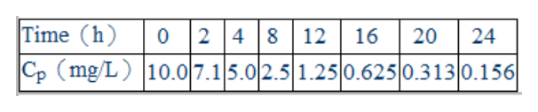

開卷有益 ／
藥師 ／ 藥劑學與生物藥劑學 ／ 110 年第 1 次110 年第 1 次藥師藥劑學與生物藥劑學試題與答案
這一頁是民國 110 年第 1 次藥師藥劑學與生物藥劑學的整份歷屆試題，共 80 題，題目與標準答案出自考選部「國家考試試題及測驗式試題答案」開放資料，其中 77 題附有詳解。以下逐題列出題幹、選項與答案；要計時作答或記錄成績，請用線上練習。
考選部原始場次代碼：110020
線上作答這一科 →
全部 80 題
第 1 題
有關溶解度之定義，「略溶」是指 1 g或 1 mL溶質能溶於若干mL溶劑？
（A） 1～10（B） 10～30（C） 30～100（D） 100～1000答案：（C）
詳解與考點 正解：本題要依藥典的溶解度分級判定「略溶」。以 1 g 固體或 1 mL 液體溶質為基準，若需 30 至 100 mL 溶劑才可溶解，即為略溶（sparingly soluble），故選 C。
A：1 至 10 mL 溶劑所代表的是易溶（freely soluble）的範圍，所需溶劑量比略溶少得多。
B：10 至 30 mL 溶劑屬溶解（soluble）的範圍，仍未達略溶所需的 30 mL 下限。
D：100 至 1000 mL 溶劑表示微溶（slightly soluble），所需溶劑量已比略溶更多；分辨時看每 1 單位溶質所需溶劑量由少到多的順序。
本題考點：藥典溶解度分級（pharmacopeial solubility terms）——先固定 1 g 或 1 mL 溶質，再以所需溶劑體積區間判定術語；略溶（sparingly soluble）——所需溶劑為 30 至 100 mL 時使用此名稱，勿與相鄰的溶解或微溶混淆。
第 2 題
某藥物之降解遵循一階次動力學過程，已知其在 77℃時之降解速率常數為 27℃時之 10 倍，其活化能為若干 cal/mol？
（A） 190（B） 795（C） 9,597（D） 40,157答案：（C）
詳解與考點 正解：溫度造成一階降解速率常數改變時，應用 Arrhenius equation 比較兩個溫度的速率常數。先換算絕對溫度：T27 = 27 + 273 = 300 K，T77 = 77 + 273 = 350 K，且 k77/k27 = 10。代入 ln(k77/k27) = Ea/R × [1/(300 K) - 1/(350 K)]，取 R = 1.987 cal/(mol·K)，得 Ea = 1.987 cal/(mol·K) × ln 10 / [1/(300 K) - 1/(350 K)] ≈ 9.6 × 10^3 cal/mol，對應 9,597 cal/mol，故選 C。
A：190 cal/mol 代回 Arrhenius equation 時，k77/k27 = exp[(190/1.987) × (1/300 - 1/350)] ≈ 1.05，無法得到題目給定的 10 倍速率差。
B：795 cal/mol 代回可得 k77/k27 ≈ 1.21，仍遠小於 10。溫度項必須以 K 計算，不能直接以 77 與 27 的攝氏數值相除或相減。
D：40,157 cal/mol 代回可得 k77/k27 約為 1.5 × 10^4，遠大於 10；此值將溫度敏感性高估。
本題考點：Arrhenius equation——已知兩溫度的速率常數比時，以 ln(k2/k1) = Ea/R × [1/T1 - 1/T2] 反推活化能；絕對溫度（absolute temperature）——凡速率常數與溫度的指數關係，必先把 ℃ 轉為 K；一階降解（first-order degradation）——題目給的是速率常數之比時，可直接比較 k，不必先求濃度。
第 3 題
依中華藥典，有關甘草浸膏及甘草流浸膏，下列敘述何者正確？
（A） 製造甘草浸膏時係以氯仿水為浸溶劑（B） 製造甘草流浸膏時係以氨水為浸溶劑（C） 兩者製造時皆以甘草中粉粉末為原料（D） 兩者之用途均作為矯味用答案：（D）
詳解與考點 正解：本題考的是中華藥典中兩項甘草製劑的品項規定。甘草浸膏與甘草流浸膏的製備細節並不相同，但兩者都可用來改善製劑的味道，因此共同正確的敘述是作為矯味用，故選 D。
A：氯仿水不是題目所指甘草浸膏製造規定中的浸溶劑。製劑中某液體的用途不能直接移作該品項的浸溶劑判斷。
B：氨水也不是題目所列甘草流浸膏製造規定中的浸溶劑。兩種名稱相近的甘草製劑不能互相套用萃取條件。
C：甘草浸膏與甘草流浸膏的原料處理與製備程序各有規定，不能概括為兩者皆以甘草中粉粉末為原料。
本題考點：甘草製劑（Glycyrrhiza preparations）——比較浸膏與流浸膏時，分開核對各自的原料處理與浸溶程序；矯味劑（flavoring agent）——遇到甘草浸膏及甘草流浸膏的共同用途時，判斷其是否用於改善口感與掩蔽不良味道。
第 4 題
依據中華藥典，下列酊劑之製備方法，何者是以滲漉法（percolation）製備而得？
（A） 複方安息香酊（B） 顛茄酊（C） 碘酊（D） 吐根酊答案：（B）
詳解與考點 正解：判準是酊劑是否由藥材粉末裝入滲漉器，讓浸溶劑持續通過藥材層以取得浸出液。顛茄酊依中華藥典以此滲漉法（percolation）製備；它和單純溶解已製得成分或以其他萃取法所得的酊劑不同，故選 B。
A：複方安息香酊的成分主要是樹脂性物質，製備重點在使既定成分溶於適當溶媒，不是以顛茄藥材式的滲漉程序取得萃取液。
C：碘酊是將碘與助溶成分配製於醇性溶媒的製劑，沒有藥材床供浸溶劑滲漉，因此不屬本題的 percolation。
D：吐根酊雖同為由生藥製成的酊劑，但其藥典製法不是本題所問的滲漉法。分辨關鍵在實際製備路徑，不在名稱是否帶有「酊」字。
本題考點：滲漉法（percolation）——藥材粉末形成固定床、浸溶劑連續通過並收集浸出液時使用此法；酊劑（tincture）——判斷製法時先區分是直接溶解、浸漬或滲漉，不能由酊劑名稱推定。
第 5 題 待校
製備異丙醇溶液，濃度標示為 5→100，下列敘述何者正確？
（A） 取異丙醇 5 mL加溶媒到 100 mL（B） 分別取異丙醇 5 mL及溶媒 95 mL混合均勻（C） 取 95 mL溶媒加異丙醇至 100 mL（D） 取異丙醇 5 mL加 100 mL溶媒答案：（A）
第 6 題
下列何者為加入環糊精（cyclodextrin）助溶之原理？
（A） 生成離子鍵（B） 降低界面張力（C） 形成複合物（complex）（D） 生成共價鍵答案：（C）
詳解與考點 正解：環糊精（cyclodextrin）的疏水性內腔可包納疏水性藥物分子，外側親水性基團則有助於在水中分散，因而以非共價的包合複合物（inclusion complex）提升表觀溶解度，故選 C。
A：生成離子鍵需要藥物與助溶劑間有穩定的正負電荷鍵結；環糊精助溶主要靠空腔包合，不是離子鍵形成。
B：降低界面張力是界面活性劑形成微胞時的主要助溶途徑。環糊精看似也能增加水中溶解量，但分辨關鍵在包合客體分子，而非降低油水界面張力。
D：環糊精與藥物之間不需生成共價鍵；若形成新共價鍵，便不再是可逆的包合複合物機制。
本題考點：環糊精包合（cyclodextrin inclusion complexation）——疏水藥物可進入環糊精內腔、親水外側朝向水相時，以包合方式判斷助溶；非共價作用力（noncovalent interactions）——包合、微胞與離子化都可提高表觀溶解度，須依分子間作用位置區分。
第 7 題
有關 o/w 乳劑，下列敘述何者最適當？
（A） 油相為連續相（B） 水相為內相（C） 均為透明狀（D） 須添加乳化劑答案：（D）
詳解與考點 正解：o/w 乳劑的水相是外相或連續相，油相以液滴形式分散在水中；要讓這些油滴不易聚結，通常必須加入適當乳化劑穩定界面，因此最適當的是須添加乳化劑，故選 D。
A：o/w 乳劑中油相是內相或分散相，不是連續相。把油相當成連續相會把 o/w 與 w/o 的結構倒置。
B：o/w 乳劑的水相為外相，並非內相；判斷時先找連續相，再以另一相作為分散液滴。
C：一般乳劑的液滴會散射光線，外觀多呈乳白或混濁狀；透明外觀較符合微乳劑等不同系統，不能作為 o/w 乳劑的通則。
本題考點：o/w 乳劑（oil-in-water emulsion）——油滴分散於水相時，水為連續相、油為內相；乳化劑（emulsifier）——遇到兩不相溶液相形成分散系統時，以降低界面自由能與防止液滴聚結來判斷其必要性。
第 8 題
有關 HLB值之敘述，下列何者正確？
（A） 其值越大代表親脂性越大（B） HLB=4～6 適合作為 w/o乳劑之乳化劑（C） HLB=25 適合作為潤濕劑（D） HLB=18 適合作為抗發泡劑答案：（B）
詳解與考點 正解：HLB 值愈低代表界面活性劑愈親脂，愈高則愈親水；適合 w/o 乳劑者需偏親油，HLB 4 至 6 正落在 w/o 乳化劑的常用範圍，故選 B。
A：HLB 值增大表示親水性增加，不是親脂性增加。名稱中的 hydrophilic-lipophilic balance 即是在比較親水與親油傾向。
C：HLB 25 的親水性很高，較接近洗滌或助溶用途；潤濕劑所需 HLB 範圍較低，不能把所有高 HLB 值都歸為潤濕劑。
D：HLB 18 偏親水，可用於 o/w 乳化或助溶相關用途；抗發泡劑則需高度親脂的低 HLB 界面活性劑。
本題考點：親水親油平衡值（hydrophilic-lipophilic balance，HLB）——先用數值高低判斷親水或親油，再配對製劑用途；w/o 乳化劑（water-in-oil emulsifier）——需要低 HLB 的親油性界面活性劑，常見判讀區間為 HLB 4 至 6。
第 9 題
依中華藥典，有關空氣動力學粒徑檢測之敘述，下列何者正確？
（A） 氣化噴霧劑之空氣動力學粒徑，等同於相同氣流流速下，上浮速度相同之球體粒徑（B） 依空氣動力學粒徑大小，階段式衝擊裝置可區分氣化噴霧式顆粒及液滴（C） 越接近最終階段之收集板所收集到之顆粒粒徑越大（D） 為避免再捲入效應，可採用不經塗膜之顆粒收集板，以證明取樣次數之影響在統計上不具顯著差異答案：（B）
詳解與考點 正解：空氣動力學粒徑檢測以顆粒在氣流中的慣性行為來分級；階段式衝擊裝置（cascade impactor）可依不同階段的截止粒徑，區分氣化噴霧劑中的顆粒與液滴，故選 B。
A：空氣動力學粒徑的等效基準是與單位密度球體具有相同終端沉降速度，不是相同上浮速度。重力沉降與氣流向上浮動的受力條件不同，不能互換。
C：氣流通過後續階段時，能穿透到越接近最終收集板者通常是較小、慣性較低的顆粒，因此不是粒徑越大。
D：為減少顆粒撞擊後反彈或再捲入，收集板通常要作適當塗膜；不經塗膜反而會增加此類誤差。
本題考點：空氣動力學粒徑（aerodynamic particle size）——以顆粒在氣流與重力場中的等效沉降行為判定，而非只看幾何直徑；階段式衝擊裝置（cascade impactor）——越後段通過的顆粒通常越小，並須以塗膜減少反彈造成的分級偏差。
第 10 題
Aluminum hydroxide懸液劑之處方如下，則選項中所列，何者作為防腐劑使用？ Aluminum hydroxide compressed gel 326.8 g Sorbitol solution 282 mL Syrup 93 mL Glycerin 25 mL Methylparaben 0.9 g Propylparaben 0.3 g Flavor qs Purified water,to make 1,000 mL
（A） sorbitol solution（B） syrup（C） glycerin（D） methylparaben答案：（D）
詳解與考點 正解：處方中 methylparaben 為 paraben 類防腐劑，且與 propylparaben 共同構成防腐系統；題目所列四項中，methylparaben 的用途就是抑制製劑中的微生物生長，故選 D。
A：sorbitol solution 主要提供甜味並可調整製劑的口感與黏稠度，不是此處方中指定的防腐劑。
B：syrup 主要作為甜味與調製口感的載體。它看似具有高糖濃度的抑菌效果，但在本處方中不能取代 paraben 類防腐劑的功能。
C：glycerin 主要作為保濕、增稠或改善口感的輔料，並非此處方所列的防腐主成分。
本題考點：防腐劑（preservatives）——處方出現 methylparaben 或 propylparaben 時，優先辨認為抑制微生物生長的防腐系統；懸液劑輔料功能（suspension excipients）——甜味劑、保濕劑與防腐劑可同時存在，應依各成分的主要處方角色區分。
第 11 題 待校
下列何者代表pseudoplastic物質的流變性（rheology）？
答案：（B）
第 12 題
利用2份water與1份gum先混合後，最後再與4份oil混合之製備方法為下列何者？
（A） bottle method（B） continental method（C） dry gum method（D） English method答案：（D）
詳解與考點 正解：題目給的是先以 2 份 water 與 1 份 gum 製成初乳，再加入 4 份 oil 的順序；這是先形成膠漿再加油的濕膠法，也稱 English method，故選 D。
A：bottle method 多用於低黏度或揮發性油，藉容器振搖乳化，並非題目所示先混合 water 與 gum 的固定順序。
B：continental method 是 dry gum method，先將 gum 與 oil 混合，再一次加入 water；其比例可相同，但操作次序與題目相反。
C：dry gum method 的關鍵也是 oil 先與 gum 接觸，不能因本題同為 4:2:1 比例就判成此法。分辨關鍵在加料順序，而非只背比例。
本題考點：濕膠法（wet gum method，English method）——先混 water 與 gum，再加入 oil 時判為 English method；乾膠法（dry gum method，continental method）——先混 oil 與 gum、再加 water 時判為 continental method，兩者比例可能相同但順序不同。
第 13 題
利用gelatin調配sodium sulfathiazole凝絮懸浮劑，應於下列何條件時最佳？
（A） gelatin A在 pH=3.2（B） gelatin A在 pH=8（C） gelatin B在 pH=5（D） gelatin B在 pH=8答案：（A）
詳解與考點 正解：sodium sulfathiazole 粒子帶負電時，需要帶適度正電的絮凝劑吸附於粒子表面，以降低排斥力並形成可再分散的絮凝。gelatin A 在 pH = 3.2 可提供此有利的正電條件，因此最適合調配凝絮懸浮劑，故選 A。
B：gelatin A 在 pH = 8 的有效正電性較弱，無法像 pH = 3.2 一樣形成最佳的異電性吸附與控制性絮凝。
C：gelatin B 在 pH = 5 接近其電荷較低的條件，難以提供足夠的表面電性來建立穩定而可再分散的絮凝結構。
D：gelatin B 在 pH = 8 偏負電，與帶負電的 sodium sulfathiazole 粒子同號，較易維持排斥而非促進絮凝。
本題考點：控制性絮凝（controlled flocculation）——懸浮粒子與高分子絮凝劑帶相反電性時，才以電荷中和或吸附橋接判斷有利條件；明膠種類與 pH（gelatin type and pH）——比較 gelatin A、gelatin B 時，先看該 pH 下的電荷方向，再判斷其與藥物粒子的相互作用。
第 14 題
25℃時水的密度為 1 g/mL，以毛細管黏度計測得黏度值為 0.895 cP；50%甘油水性溶液密度為 1.216 g/mL， 測得黏度值為 54.4 cP，若測量水需時 15 秒，則測量 50%甘油水性溶液需時若干秒？
（A） 550（B） 650（C） 750（D） 850答案：（C）
詳解與考點 正解：毛細管黏度計在同一儀器下符合 η = Kρt，因此先取兩液比值：η甘油/η水 = ρ甘油t甘油/(ρ水t水)。解得 t甘油 = η甘油 × ρ水 × t水/(η水 × ρ甘油) = 54.4 cP × 1 g/mL × 15 s/(0.895 cP × 1.216 g/mL) = 750 s，故選 C。
A：550 s 代回 η = Kρt 的比值，可得 η = 0.895 cP × 1.216 g/mL × 550 s/(1 g/mL × 15 s) ≈ 39.9 cP，低於題給的 54.4 cP。
B：650 s 代回可得 η = 0.895 cP × 1.216 g/mL × 650 s/(1 g/mL × 15 s) ≈ 47.2 cP，仍不能重現題給黏度。
D：850 s 代回可得 η = 0.895 cP × 1.216 g/mL × 850 s/(1 g/mL × 15 s) ≈ 61.7 cP，反而高於題給黏度。
本題考點：毛細管黏度計（capillary viscometer）——同一儀器比較兩液時用 η1/η2 = ρ1t1/(ρ2t2)，不可只比流動時間；密度校正（density correction）——黏度與流動時間的換算要同時帶入密度，否則會得到錯誤秒數。
第 15 題
有關栓劑之貯藏，下列何者正確？
（A） 可可脂栓劑應置於緊密容器內，於 30℃以下貯之（B） 可可脂栓劑應置於密閉容器內，35℃以下貯之（C） 甘油明膠栓劑應置於緊密容器內，35℃以下貯之（D） 聚乙二醇栓劑需冷凍貯藏答案：（C）
詳解與考點 正解：栓劑的貯藏須同時符合基劑對溫度與容器的要求。依題目所指中華藥典，甘油明膠栓劑應置於緊密容器內並於 35℃ 以下貯藏，這組條件完整正確，故選 C。
A：可可脂栓劑對熱敏感的判斷方向雖看似合理，但「緊密容器」與 30℃ 以下的組合不是題目所指規定的完整條件。此題須連同容器類型與溫度一起核對。
B：可可脂栓劑的貯藏要求不能以 35℃ 以下概括；基劑在較高溫度下有軟化或熔融風險，故此組條件不正確。
D：聚乙二醇栓劑不以冷凍貯藏為一般要求。它與可可脂基劑的溫度敏感性不同，不能把可可脂的保存概念直接套用。
本題考點：栓劑貯藏（suppository storage）——比較基劑時同時核對容器要求與最高貯藏溫度，不能只看其中一項；甘油明膠栓劑（glycerinated gelatin suppository）——遇到藥典貯藏題時，辨認緊密容器與 35℃ 以下的成對規定。
第 16 題
Dibucaine軟膏適用於昆蟲咬傷或皮膚刺激所引起之疼痛及搔癢，依中華藥典之規定，此軟膏不得檢出：
（A） 金黃色葡萄球菌（B） 大腸桿菌（C） 酵母菌（D） 黴菌答案：（A）
詳解與考點 正解：Dibucaine 軟膏供皮膚局部使用，微生物限量試驗除了總菌數控制外，還要確認特定病原菌未檢出。依題目所指中華藥典，金黃色葡萄球菌是此軟膏不得檢出的特定菌，故選 A。
B：大腸桿菌不是本題所列 Dibucaine 軟膏應以「不得檢出」判定的指定菌種。指定菌種會隨給藥途徑與製劑類別而不同，不能把腸道製劑的判準直接套入皮膚用軟膏。
C：酵母菌的控制通常以製劑的微生物限量要求判定，並非本題所問的特定病原菌不得檢出項目。
D：黴菌同樣可能納入微生物品質控制，但不等同於本題指定的金黃色葡萄球菌未檢出試驗。分辨關鍵在「總量限度」與「指定菌不得檢出」是兩種不同的判定。
本題考點：微生物限量試驗（microbial limits test）——先分清總菌數限度與特定微生物未檢出試驗，再依製劑使用途徑判定；皮膚用半固體製劑（topical semisolid preparations）——遇到軟膏品質題時，特別留意金黃色葡萄球菌等與皮膚感染相關的指定菌。
第 17 題
依據中華藥典對軟膏劑「最低內容量試驗法」之規定，第一階段取檢品 a 個檢驗，所取檢品平均內容量，不 得少於標誌量，標誌量為 60 g 以下之軟膏劑，其單一內容量均不得低於標誌量的 b %，而標誌量為 60 g 以上 但在 150 g 以下者，其單一內容量均不得低於標誌量的 c %，其中 a、b、c 依序分別為下列何者？
（A） 10、95、90（B） 10、90、95（C） 20、95、90（D） 20、90、95答案：（B）
詳解與考點 正解：依題目所指軟膏劑最低內容量試驗法，第一階段取 10 個檢品，平均內容量不得少於標誌量；標誌量 60 g 以下者，每一單一內容量不得低於標誌量的 90%，60 g 以上但 150 g 以下者不得低於 95%。故 a、b、c 依序為 10、90、95，故選 B。
A：第一階段取 10 個檢品正確，但將 60 g 以下與 60 g 以上但 150 g 以下兩個單一內容量百分比顛倒；較小標誌量的門檻是 90%，不是 95%。
C：20 個檢品不符第一階段的取樣數；且 95%、90% 也把兩個標誌量區間的最低內容量門檻倒置。
D：90%、95% 的區間順序正確，但第一階段取樣數寫成 20 個，仍不符規定。
本題考點：最低內容量試驗（minimum fill test）——先分別核對第一階段取樣數、平均內容量與單一內容量，三者不可混為一項；軟膏劑內容量（ointment fill content）——標誌量跨過 60 g 時，單一內容量下限由 90% 變為 95%，須依區間判定。
第 18 題
下列何者屬於同一類型軟膏基劑？①lanolin ②white ointment ③hydrophilic ointment ④ hydrophilic petrolatum
（A） ①②（B） ③④（C） ②③④（D） ①④答案：（D）
詳解與考點 正解：軟膏基劑依與水的關係可分為烴類、吸收性、水可洗除與水溶性等類型。lanolin 與 hydrophilic petrolatum 都能吸收一定量的水，屬吸收性軟膏基劑，因此同類的是①④，故選 D。
A：lanolin 是吸收性基劑，但 white ointment 屬烴類基劑，主要提供封閉性與潤膚性，兩者分類不同。
B：hydrophilic ointment 屬水可洗除基劑，hydrophilic petrolatum 則為吸收性基劑；兩者名稱都有 hydrophilic，卻是依乳化能力與基劑結構分在不同類。
C：white ointment、hydrophilic ointment 與 hydrophilic petrolatum 分別代表烴類、水可洗除與吸收性基劑，不能因都可作軟膏基質就視為同一類。
本題考點：吸收性軟膏基劑（absorption bases）——能吸收水相但本身不是水可洗除基劑時，歸入 lanolin、hydrophilic petrolatum 這類；軟膏基劑分類（ointment base classification）——名稱中的 hydrophilic 不是分類依據，應看與水的相容性、乳化能力與可洗除性。
第 19 題
以不同成分製備的水性凝膠劑（gels），有關其黏度變化之敘述，下列何者錯誤？
（A） 鈣鹽會降低alginic acid凝膠之黏度（B） 氫氧化鈉會增加carbomer凝膠之黏度（C） 溫度對colloidal silicon dioxide凝膠之黏度無太大影響（D） 高濃度電解質會增加methylcellulose凝膠之黏度答案：（A）
詳解與考點 正解：本題問錯誤敘述。alginic acid 的羧酸鹽鏈遇鈣離子會形成交聯網狀結構，使凝膠化與黏度增加；因此把鈣鹽說成會降低 alginic acid 凝膠黏度的敘述方向相反，故選 A。
B：氫氧化鈉使 carbomer 的酸性基團中和、鏈段伸展並吸水膨潤，黏度會增加，所以這是正確敘述而非答案。
C：colloidal silicon dioxide 凝膠的黏度相對不受溫度大幅影響，和具明顯熱膠化或熱可逆行為的高分子凝膠不同，故不是答案。
D：高濃度電解質可藉鹽析效應增加 methylcellulose 凝膠的黏度，因此此敘述正確。看似所有電解質都會破壞凝膠，但效應需依膠體種類判斷。
本題考點：藻酸鹽交聯（alginate cross-linking）——遇鈣離子時以二價離子交聯、凝膠增強與黏度上升判斷；carbomer 中和增稠（carbomer neutralization）——加入鹼使聚合物鏈電離伸展時，黏度上升；電解質效應（electrolyte effects on gels）——不可把某一凝膠的鹽效應套用到所有高分子系統。
第 20 題
依中華藥典對軟膏基劑之敘述，下列何者最適用於說明親水軟膏之特性？
（A） 係水/油型乳劑，不易用水洗去（B） 屬吸收性基劑，具滋潤作用（C） 屬水和性基劑，通常稱為乳質軟膏（D） 屬水溶性基劑，不油膩答案：（C）
詳解與考點 正解：親水軟膏的分類關鍵在其可與水混和且可水洗的乳劑基劑性質。（C）所述水和性基劑即水可洗除的乳質軟膏，通常為油/水型乳劑；它可吸收適量水分而不具有純油脂基劑的黏膩性，故選 C。
A：（A）水/油型乳劑的外相為油，水洗性差，較符合油性或吸收性乳劑基劑的特徵，不是親水軟膏的典型描述。
B：（B）吸收性基劑可吸收水分並具潤膚性，但其原本多為無水、油性基劑；能吸水不等於已是水可洗除的親水軟膏。
D：（D）水溶性基劑如 polyethylene glycol 基劑確實不油膩，但它以水溶性高分子溶解為主，並非乳質軟膏。
本題考點：親水軟膏（hydrophilic ointment）——看到水和性、乳質與可水洗時，判為油/水型乳劑基劑；吸收性基劑（absorption base）——判斷重點是無水油性基劑吸入水分的能力，不可和既成乳劑混同；水溶性基劑（water-soluble base）——不油膩且可水洗，但不以乳劑結構為判準。
第 21 題
有關栓劑之敘述，下列何者錯誤？
（A） 外型種類多，會因使用部位不同而有顯著差異（B） 使用於體腔時，會呈現融化、溶解或軟化現象（C） 就重量而言，直腸栓劑大多比陰道栓劑重（D） 有些藥效只具局部作用，但有些可能具全身性作用答案：（C）
詳解與考點 正解：本題反問哪一項敘述錯誤，判準是不同給藥腔體的栓劑大小與用途。直腸栓劑通常比陰道栓劑輕；（C）卻把重量方向說反，因此為錯誤敘述，故選 C。
A：（A）栓劑會依直腸、陰道或尿道等投與部位設計外形與大小，以利置入並減少不適，此敘述正確。
B：（B）栓劑進入體腔後須藉由體溫或體液發揮作用，可依基劑特性融化、溶解或軟化，此敘述正確。
D：（D）栓劑可作局部治療，也可讓藥物經黏膜吸收而產生全身性作用；作用範圍取決於藥物與處方目的，此敘述正確。
本題考點：栓劑重量與部位（suppository dosage form）——比較不同栓劑時先看投與腔體的容積，陰道栓劑通常較直腸栓劑重；栓劑釋放機制（melting, dissolution, softening）——依基劑與體腔環境判斷融化、溶解或軟化；局部與全身作用（local versus systemic effect）——不要由劑型直接推定作用範圍，須再看吸收與治療目的。
第 22 題
若栓劑模子體積固定，當使用 A 基劑（密度0.9 g/cm3）製得空白栓劑時，每粒重 2 g；今欲製備密度為 3.0 g/cm3 之藥品栓劑，每粒栓劑含藥 200 mg，製備 10 粒栓劑，共需 A 基劑若干克？
（A） 20.0（B） 19.4（C） 18.6（D） 18.0答案：（B）
詳解與考點 正解：模子體積固定時，藥品加入後排開的是基劑的體積，不是等重量的基劑。空白栓劑的模子體積 = 2 g / 0.9 g/cm3 = 2.2222 cm3。每粒藥品先換算為 200 mg = 0.200 g，藥品體積 = 0.200 g / 3.0 g/cm3 = 0.0667 cm3。每粒可容納的 A 基劑體積 = 2.2222 cm3 - 0.0667 cm3 = 2.1555 cm3；A 基劑重量 = 2.1555 cm3 × 0.9 g/cm3 = 1.94 g。製備 10 粒所需 A 基劑 = 1.94 g × 10 = 19.4 g，故選 B。
A：（A）20.0 g 是空白栓劑的總重量，計算為 2.0 g × 10，完全沒有扣除藥品占據的體積。
C：（C）18.6 g 等於每粒只留 1.86 g 基劑，也就是每粒扣除了 0.14 g 基劑；實際上 0.200 g 藥品只占 0.0667 cm3，排開的 A 基劑為 0.0667 cm3 × 0.9 g/cm3 = 0.060 g，扣除量過大。
D：（D）18.0 g 等於每粒以 0.200 g 直接取代 0.200 g 基劑，混淆了重量替代與體積替代。密度不同時，固定模子必須用體積計算。
本題考點：栓劑置換值（displacement value）——模子固定時先把藥品重量換成體積，再算被排開的基劑量；密度與體積換算（density-volume conversion）——使用 V = m/ρ 時，所有成分都要保留其各自密度與單位；單位換算（unit conversion）——計算前先將 200 mg 換成 0.200 g，避免把不同質量單位直接代入。
第 23 題
冷凍乾燥的原理為何？
（A） 蒸發（B） 脫氣（C） 昇華（D） 吸收答案：（C）
詳解與考點 正解：冷凍乾燥先將製品中的水凍成固態，再在減壓下使冰直接轉為水蒸氣；固態直接變成氣態的相變就是昇華（sublimation），故選 C。
A：（A）蒸發是液態水轉成氣態水的過程；冷凍乾燥的主要除水階段從冰開始，並非先回到液態再蒸發。
B：（B）脫氣是移除溶液或容器中的溶解氣體、氣泡或殘留氣體，不能說明凍結水分被移除的原理。
D：（D）吸收是物質被另一材料吸附或吸收的現象，冷凍乾燥並不靠乾燥劑吸走水分。
本題考點：冷凍乾燥（lyophilization）——看到先凍結、減壓除水時，判斷核心相變為冰的昇華；昇華（sublimation）——固態直接轉氣態，須與液態轉氣態的蒸發區分；製劑安定性（product stability）——熱敏感製品可利用低溫除水，降低受熱造成的劣化。
第 24 題
有關粉體之流動性，下列敘述何者最適當？
（A） 粒徑越小流動性越佳（B） 壓縮比越大流動性越佳（C） 以圓形粒子之流動性較佳（D） 具較大安息角之流動性較佳答案：（C）
詳解與考點 正解：粉體是否容易流動取決於粒子間摩擦、附著力與形狀。圓形粒子的接觸與咬合作用較小，較容易滾動通過料斗或模穴，因此（C）最適當，故選 C。
A：（A）粒徑變小時，比表面積增加，粒子間的凡得瓦力與靜電等凝聚作用相對顯著，通常會使流動性變差。
B：（B）壓縮比越大，代表鬆裝與振實後體積差異越大、粉床越易被壓密，通常反映流動性較差而非較佳。
D：（D）安息角越大表示粉堆坡面越陡、內部摩擦越大；流動性良好的粉體應有較小安息角。
本題考點：粒子形狀（particle shape）——比較流動性時，圓滑或球形粒子通常比不規則粒子易流動；壓縮比（compressibility index）——鬆裝與振實差異越小，流動性通常越好；安息角（angle of repose）——角度越小表示粒子間摩擦較低，可作為粉體流動性的快速判讀指標。
第 25 題
將重量 36 g 之粉末小心倒入 100 mL 之量筒，測得整體體積（bulk volume）為 72 mL，若此時之整體孔度 （porosity）為 25%，該粉末之真密度（true density）為多少 g/mL？
（A） 0.36（B） 0.48（C） 0.54（D） 0.67答案：（D）
詳解與考點 正解：孔度 25% 表示整體體積中有 25% 是空隙，固體真正占據的體積為 72 mL × （1 - 0.25）= 54 mL。真密度 = 粉末重量 / 真體積 = 36 g / 54 mL = 0.6667 g/mL，約為 0.67 g/mL，故選 D。
A：（A）0.36 g/mL 對應把 36 g 除以量筒標示的 100 mL 容量，而非題目實測的整體體積與扣除空隙後的真體積。
B：（B）0.48 g/mL 會使粉末真體積成為 36 g / 0.48 g/mL = 75 mL，反而大於 72 mL 的整體體積，與存在正孔度不相容。
C：（C）0.54 g/mL 會使真體積成為 36 g / 0.54 g/mL = 66.7 mL，所對應空隙比例約為（72 - 66.7）/ 72 = 7.4%，不符合題設的 25%。
本題考點：孔度（porosity）——先用固體體積 = 整體體積 × （1 - 孔度）扣除空隙；真密度（true density）——以粉末重量除粒子本身的真體積，不可直接除鬆裝體積；整體密度（bulk density）——以重量除整體體積時仍包含粒子間空隙，數值會小於真密度。
第 26 題
藥師臨時調劑小數量膠囊劑時，以punch method進行充填，依各成分之密度計算其占據膠囊體積百分比，估 算乳糖添加量，計算時應採用下列何種密度較為適當？
（A） bulk density（B） tapped density（C） true density（D） granule density答案：（B）
詳解與考點 正解：punch method 的粉末會在膠囊體內經填入與壓實而呈現較穩定的堆積狀態，估算各成分實際占據體積時應採用振實密度（tapped density）。它較能反映充填後粉床所占的體積，故選 B。
A：（A）bulk density 是粉末自然鬆裝時的密度，空隙較多；直接用它估算會把充填後所需體積估得過大。
C：（C）true density 排除了所有粒子內外空隙，只代表材料本身的體積，不能代表膠囊內粉床的堆積體積。
D：（D）granule density 是針對顆粒物的特定密度描述，未必反映本題臨時調劑粉末在 punch method 下的實際振實狀態。
本題考點：振實密度（tapped density）——估算受壓實或振實後的粉末充填體積時優先使用；鬆裝密度（bulk density）——只適合描述未壓實粉床，不能直接替代充填狀態；真密度（true density）——排除空隙後用於材料本質密度判讀，不用來推算膠囊粉床體積。
第 27 題
若硬膠囊中含有易液化之藥品成分，可添加適當吸收劑改善，下列何種成分最不適合做為此用途之吸收劑？
（A） magnesium carbonate（B） colloidal silicon dioxide（C） light magnesium oxide（D） polyethylene glycol答案：（D）
詳解與考點 正解：硬膠囊中有易液化成分時，吸收劑應能吸附或吸收形成的液體，使粉體重新維持乾鬆與可充填性。polyethylene glycol 並非這類多孔無機吸收劑，且可能增加處方的吸濕或軟化傾向，因此最不適合，故選 D。
A：（A）magnesium carbonate 為多孔粉體，可作為吸收劑處理易液化或形成液體的組分，適合此用途。
B：（B）colloidal silicon dioxide 具有高比表面積與吸附能力，常用來改善粉體流動並吸附少量液體，屬合理選擇。
C：（C）light magnesium oxide 可提供吸收與乾燥作用，能協助維持含易液化成分粉體的可操作性。
本題考點：吸收劑（absorbent）——處理易液化粉末時，選多孔且能固定液體的粉體；共熔與液化（eutectic liquefaction）——兩種固體混合後若形成液相，須以吸收劑或處方分隔降低流動化；膠囊充填性（capsule fillability）——判斷添加物時同時看能否維持乾鬆、流動與均勻充填。
第 28 題
下列何者無法達到粉末粒度小於 120 mesh？
（A） 錘擊式粉碎機 （impact crusher）（B） 水飛法（water grinding）（C） 流能磨 （fluid energy mill）（D） 球磨機 （ball mill）答案：（A）
詳解與考點 正解：本題以能否取得小於 120 mesh 的細粉為判準。錘擊式粉碎機主要靠高速撞擊破碎，通常用於較粗至中等粒度的粉碎，難以作為取得此級別細粉的適當方法，故選 A。
B：（B）水飛法利用細粒在液體中的懸浮與分離，可取得較細的粉末，能用於本題所要求的粒度範圍。
C：（C）流能磨以高速氣流使粒子互相碰撞，可製備極細粉末；細化能力遠超過 120 mesh 的要求。
D：（D）球磨機藉研磨介質反覆撞擊與摩擦粉碎，可經足夠研磨時間得到細粉，並非本題所問的限制。
本題考點：錘擊式粉碎（impact crushing）——適合初步或中等細度粉碎，不以超細化為主要用途；流能磨（fluid energy mill）——需要極細粉時，以高速氣流碰撞製粉；水飛法（water grinding）——利用液體中粒子的沉降與懸浮差異分取細粒，不是單純乾式篩分。
第 29 題
製備發泡性顆粒劑時，下列敘述何者錯誤？
（A） 乾式法或熔合法製備時，黏合劑的來源是檸檬酸的結晶水（B） 溼式法製備時，只以水作為黏合劑，將粉末潤溼，製得軟塊以造粒（C） 製備過程所接觸之容器，必須為不銹鋼或其他抗酸之材質（D） 乾燥後之顆粒，應立即放入容器中緊密封存答案：（B）
詳解與考點 正解：發泡性顆粒中的酸與鹼一接觸水分便可能提前反應釋出二氧化碳，因此溼式法不能只用水作黏合劑。（B）會使成分潤溼後提早發泡，與維持成品安定性的要求相反，故選 B。
A：（A）乾式法或熔合法可利用檸檬酸的結晶水形成黏結作用，使粉末聚集成顆粒，此敘述正確。
C：（C）配方含酸性成分，製備設備若不耐酸可能受腐蝕或污染製品，因此須選不銹鋼或其他抗酸材質，此敘述正確。
D：（D）乾燥後的顆粒仍會受環境水分影響，應立即緊密封存以避免吸濕後提前反應，此敘述正確。
本題考點：發泡性顆粒（effervescent granules）——酸與碳酸鹽系統須避免水分，以防製備或貯存時提前產氣；非水性潤濕（nonaqueous granulation）——需濕式造粒時選不會觸發酸鹼反應的適當潤濕系統；防潮包裝（moisture-proof packaging）——乾燥完成後立即密封，才能維持顆粒的發泡能力。
第 30 題
依錠劑含量均一度試驗，測得10個檢品之個別有效成分，其中有9個檢品在標誌含量90.0%～110.0%之範圍 內，1個檢品在標誌含量的80.5%，而其相對標準差為7.0%。依藥典規定，應如何繼續進行該試驗？
（A） 再取10個檢品重複進行同一試驗（B） 再取20個檢品重複進行同一試驗（C） 再取30個檢品重複進行同一試驗（D） 判定為不符規格，不須再進行試驗答案：（B）
詳解與考點 正解：含量均一度的首批 10 個檢品出現一個 80.5% 與 7.0% RSD，表示未滿足第一階段可直接合格的條件，但仍屬規定須進入第二階段的情形。第二階段是在原有 10 個檢品之外再取 20 個，合計 30 個後依規定重新判定，故選 B。
A：（A）再取 10 個只會得到合計 20 個檢品，未達第二階段規定應以 30 個檢品評估的數量。
C：（C）再取 30 個會使總數成為 40 個，超出本題所述第二階段的取樣設計；續試不是任意增加樣本數。
D：（D）初次結果雖不能直接判定合格，但題設情形是先追加檢品後再綜合判定，不能在第一階段立即停止並判為不符規格。
本題考點：含量均一度（content uniformity）——先以首批檢品判斷能否直接通過，落入續試條件時依規定追加固定數量；相對標準差（relative standard deviation, RSD）——用來衡量個別含量的離散程度，須和個別含量範圍一併判讀；分階段取樣（stagewise sampling）——續試時保留首批結果並合併後續檢品，不是另做一套獨立試驗。
第 31 題
一般而言，下列錠劑何者之崩散及溶離最快？
（A） buccal tablets（B） immediate-release tablets（C） molded tablets（D） rapidly dissolving tablets答案：（D）
詳解與考點 正解：此處要比較的是劑型設計上最快的崩散與溶離速度。rapidly dissolving tablets 專為在口腔中迅速崩散或溶解而設計，通常比一般立即釋放錠更快產生分散的藥物粒子，故選 D。
A：（A）buccal tablets 的目的在使藥物於頰黏膜附近停留並吸收，常需要足夠的黏附與持續時間，不以最快崩散為設計目標。
B：（B）immediate-release tablets 代表不採延遲或緩釋設計，但其崩散速度仍受硬度、崩散劑與處方影響，不能直接等同最快。
C：（C）molded tablets 結構多孔，確實可能較易溶解；但快速溶離錠是以迅速口腔崩散為明確設計目標，分辨關鍵在是否針對最快速崩散製劑化。
本題考點：快速溶離錠（rapidly dissolving tablets）——看到口腔內迅速崩散或溶解的設計目的時，判定其崩散速度優先；立即釋放錠（immediate-release tablets）——表示不延後釋放，不保證在各種錠劑中最快崩散；頰錠（buccal tablets）——需考慮黏膜停留與吸收，不能以一般吞服錠的溶離目標判讀。
第 32 題
下列何者最不適合用於提高錠劑之崩散效率？
（A） mannitol（B） starch（C） microcrytalline celluose（D） cellulose acetate phthalate答案：（D）
詳解與考點 正解：提高錠劑崩散效率需要能吸水膨潤、形成毛細管吸水或溶解後留下通道的成分。cellulose acetate phthalate 是腸溶包衣聚合物，設計目的在抵抗胃液、延後藥物釋放，反而不適合拿來提高崩散，故選 D。
A：（A）mannitol 為水溶性賦形劑，溶解後可增加錠劑孔隙並幫助水分進入，對崩散可有輔助作用。
B：（B）starch 可吸水膨潤，是常用的崩散相關賦形劑，符合提高崩散效率的方向。
C：（C）microcrystalline cellulose 可藉毛細管吸水作用促進水分滲入錠劑，常可協助崩散；分辨關鍵在其為錠芯賦形劑，而非控制釋放的包衣膜。
本題考點：崩散劑（disintegrant）——選能吸水、膨潤或導水形成裂隙的材料來加速錠劑崩散；微結晶纖維素（microcrystalline cellulose）——以毛細管吸水等作用協助錠芯崩散；腸溶包衣（enteric coating）——目標是耐胃酸並延後釋放，與加速一般錠劑崩散的方向相反。
第 33 題
下列何者不屬於active immunizing agent？
（A） MMR vaccine（B） Rabies vaccine（C） Tetanus（D） Typhoid答案：（C）
詳解與考點 正解：本題「Tetanus」指的是破傷風抗毒素或免疫球蛋白製劑，其作用機轉是直接提供現成抗體，屬被動免疫（passive immunization），而非誘導自身產生抗體的主動免疫；與 MMR、Rabies、Typhoid 等疫苗誘導自身免疫反應之主動免疫性質不同，故選 C。
A：MMR vaccine為麻疹、腮腺炎、德國麻疹之活性減毒疫苗，誘導人體自身產生免疫反應，屬主動免疫製劑。
B：Rabies vaccine為狂犬病不活化疫苗，同樣誘導人體自身產生免疫反應，屬主動免疫製劑。
D：Typhoid vaccine為傷寒疫苗，無論是不活化或減毒活性劑型，皆誘導人體自身產生免疫反應，屬主動免疫製劑。
本題考點：主動免疫與被動免疫的區分（active vs. passive immunization）——主動免疫誘導自身產生抗體（如各類疫苗），被動免疫則直接給予現成抗體（如免疫球蛋白、抗毒素）；破傷風相關免疫製劑的雙重性——破傷風類毒素屬主動免疫，破傷風免疫球蛋白則屬被動免疫，選項中的「Tetanus」需視具體所指製劑類型判斷。
第 34 題
有關生物製劑產品添加物之敘述，下列何者錯誤？
（A） cysteine hydrochloride 可作為抗氧化劑，協助維持蛋白質構型之穩定（B） EDTA作為螯合劑（chelating agent），可與銅離子、鈣離子等結合（C） mannitol 存在於劑型中，可作為防凍劑（cryoprotectant）（D） Poloxamer 407可作為防腐劑答案：（D）
詳解與考點 正解：蛋白質製劑的添加物可分別用於抗氧化、螯合金屬離子、防凍或降低界面造成的聚集。Poloxamer 407 的主要角色是界面活性劑與安定化輔料，不是抑制微生物生長的防腐劑，因此（D）錯誤，故選 D。
A：（A）cysteine hydrochloride 可作為還原性抗氧化相關添加物，協助降低氧化造成的蛋白質不安定，此敘述正確。
B：（B）EDTA 可螯合銅、鈣等金屬離子，減少金屬離子參與的不利反應或不安定性，此敘述正確。
C：（C）mannitol 可在冷凍或冷凍乾燥相關製程中提供保護作用，作為 cryoprotectant 的敘述正確。
本題考點：界面活性劑（surfactant）——蛋白質製劑中可減少界面吸附與聚集，但不應和防腐劑混為一談；螯合劑（chelating agent）——金屬離子催化氧化或造成不安定時，以 EDTA 等螯合劑降低影響；冷凍保護劑（cryoprotectant）——冷凍製程中用以降低蛋白質結構受損的風險。
第 35 題
人類乳突病毒疫苗（HPV vaccine）可用於預防何種疾病？
（A） 肺結核（B） 前列腺癌（C） 破傷風（D） 子宮頸癌答案：（D）
詳解與考點 正解：HPV vaccine 的預防目標是高風險人類乳突病毒感染及其相關癌前病變與癌症，其中最具代表性的疾病是子宮頸癌，因此（D）正確，故選 D。
A：（A）肺結核由 Mycobacterium tuberculosis 感染造成，預防概念與 HPV vaccine 無關。
B：（B）前列腺癌不是 HPV vaccine 的常規預防適應症；不能因 HPV 與多種上皮性病變有關，就延伸為所有癌症的預防疫苗。
C：（C）破傷風由 Clostridium tetani 毒素引起，預防需使用含破傷風類毒素的疫苗，與 HPV vaccine 的抗原不同。
本題考點：人類乳突病毒疫苗（HPV vaccine）——遇到高風險 HPV 相關疾病時，優先連結子宮頸癌預防；疫苗抗原特異性（antigen specificity）——疫苗的保護範圍由所含抗原決定，不能由「都是感染或癌症」推論互相適用；癌症預防（cancer prevention）——預防致癌病毒感染可降低相關癌症風險，但不等同治療既有癌症。
第 36 題 待校
依中華藥典，以脂肪油作為注射之溶媒時，其皂化價及碘價應分別為何？
（A） 185–200，79–141（B） 79–141，185–200（C） 160–225，69–151（D） 69–151，160–225答案：（A）
第 37 題
氣體滅菌法最常使用下列何者？
（A） chlorine dioxide（B） ethylene oxide（C） formaldehyde（D） propylene oxide答案：（B）
詳解與考點 正解：氣體滅菌法最常使用 ethylene oxide。它可在低溫下穿透包裝材料與狹窄管腔，適合不耐高溫或濕熱的醫療器材，因此（B）正確，故選 B。
A：（A）chlorine dioxide 具有殺菌作用，也可用於特定環境或系統的消毒處理；但不是醫療器材氣體滅菌最常用的標準選項。
C：（C）formaldehyde 可作氣體滅菌劑，但因毒性、刺激性與操作限制，臨床器材滅菌的常用性不如 ethylene oxide。
D：（D）propylene oxide 亦有滅菌活性，但應用範圍與安全性考量使其不是最常使用的氣體滅菌劑。
本題考點：環氧乙烷滅菌（ethylene oxide sterilization）——器材不耐熱、不耐濕且有包裝或管腔時，優先聯想到低溫氣體滅菌；穿透性（penetration）——選滅菌法時須看能否進入包裝與內腔，不只看殺菌力；滅菌殘留（sterilant residue）——氣體滅菌後需考慮殘留與逸散處理，不能只以低溫優勢判斷。
第 38 題
下列那些製劑會因有效成分干擾結果，不建議以原液使用LAL（Limulus amebocyte lysate）法測定內毒素？ ①vancomycin HCl注射液 ②meperidine HCl注射液 ③血漿蛋白 ④無菌注射用水
（A） 僅①②（B） 僅②③（C） 僅①④（D） ①②③④答案：（A）
詳解與考點 正解：LAL 檢測仰賴內毒素觸發的凝膠或顯色反應，原液中（①）vancomycin HCl 注射液與（②）meperidine HCl 注射液會干擾結果，不能直接以原液測定，須先依試驗適用性採取適當稀釋或處理。符合的組合只有①②，故選 A。
B：（B）僅列②meperidine HCl 注射液，漏掉同樣會干擾 LAL 反應的①vancomycin HCl 注射液，組合不完整。
C：（C）納入④無菌注射用水，卻漏掉②meperidine HCl 注射液；本題問的是有效成分造成的原液干擾，④不屬應列入的製劑。
D：（D）把③血漿蛋白與④無菌注射用水一併列入，擴大了題目指定的干擾組合。判斷 LAL 是否可用原液，應以各製劑的試驗適用性為準，不能只因基質看似複雜就一概排除。
本題考點：鱟試劑法（Limulus amebocyte lysate, LAL）——以內毒素觸發的反應測定細菌內毒素；試驗干擾（assay interference）——判讀原液能否測定時，須分辨藥品是否抑制或增強反應；方法適用性（method suitability）——遇到干擾製劑時，以經驗證的稀釋或處理方式維持檢測有效性。
第 39 題
有關滅菌法的選擇，下列何者錯誤？
（A） 依中華藥典，除另有規定外，油質懸液劑以乾熱法滅菌時，應於150℃下加熱一小時（B） 已裝填於包材中之醫療用插管，通常使用氣體滅菌法（C） 進行無菌試驗時所需的培養基，應選用高壓蒸氣滅菌法（D） 甘油不宜採用乾熱滅菌法答案：（D）
詳解與考點 正解：滅菌法須同時考慮製品耐熱性、是否含水、包裝型態與方法適用性。甘油屬可耐受乾熱處理的非水性液體，並非「不宜採用乾熱滅菌法」；（D）將適用性說反，故選 D。
A：（A）油質懸液劑在無另有規定時，可依題述以 150°C 乾熱加熱一小時滅菌；油性製劑不適合以濕熱方式處理，此敘述正確。
B：（B）已裝填於包材中的醫療用插管常不耐高溫或濕熱，氣體滅菌能穿透包材與管腔，此敘述正確。
C：（C）無菌試驗用培養基可耐受高壓蒸氣，採高壓蒸氣滅菌能有效處理培養基本身，此敘述正確。
本題考點：乾熱滅菌（dry heat sterilization）——油性、非水性且可耐熱的製品可考慮乾熱處理；氣體滅菌（gas sterilization）——已包裝且不耐熱的管腔器材須看氣體的穿透能力；高壓蒸氣滅菌（steam sterilization）——耐熱耐濕的培養基等水性材料優先採用濕熱法。
第 40 題
下列何種賦形劑，可水解生成鹽酸，降低眼用溶液之酸鹼値？
（A） 氯丁醇（B） 苯乙醇（C） 氯化苯甲烴銨（D） 乙酸苯基汞答案：（A）
詳解與考點 正解：眼用溶液中的 chlorobutanol 可在水溶液中水解產生鹽酸，使溶液酸鹼值下降；（A）符合題目所述的酸化來源，故選 A。
B：（B）苯乙醇可作為防腐相關添加物，但其結構不會以水解釋放鹽酸，不能解釋酸鹼值下降。
C：（C）氯化苯甲烴銨為季銨鹽類防腐劑，名稱含有氯化物不代表會水解生成鹽酸；分辨關鍵在水解產物，不是成分名稱是否含「氯」。
D：（D）乙酸苯基汞為含醋酸根的汞類防腐劑，並非可水解生成鹽酸的氯化醇類成分。
本題考點：氯丁醇（chlorobutanol）——眼用水溶液配方中須留意其水解可能造成酸鹼值下降；配方安定性（formulation stability）——判斷 pH 漂移時追溯賦形劑的降解產物，而非只看藥品主成分；防腐劑（preservative）——同為防腐相關添加物，化學結構與降解途徑仍可能不同。
第 41 題
以矽硼酸玻璃（borosilicate glass）製造的容器是屬於那一類型的玻璃容器？
（A） type I（B） type II（C） type III（D） NP答案：（A）
詳解與考點 正解：硼矽酸鹽玻璃具有最高的耐水解性，藥用玻璃分類中即為 type I。其鹼性成分不易溶出，特別適合對容器相容性要求高的注射製劑，故選 A。
B：type II 為經表面處理的鈉鈣玻璃，耐水解性主要來自表面去鹼化處理，不是硼矽酸鹽玻璃本身的組成特性。
C：type III 為耐水解性較低的鈉鈣玻璃，適用範圍較 type I 受限，不能以硼矽酸鹽的性質判定。
D：NP 指供非腸道以外用途的玻璃類別，並非硼矽酸鹽玻璃的分類；分辨關鍵在玻璃的耐水解性與組成，不是容器外觀。
本題考點：藥用玻璃分類（pharmaceutical glass types）——遇到硼矽酸鹽玻璃時優先判為耐水解性最高的 type I；耐水解性（hydrolytic resistance）——判斷注射劑容器時，先看玻璃是否可能溶出成分影響製劑品質。
第 42 題
依中華藥典，下列何者用於微量好氧菌或黴菌之無菌試驗檢查？
（A） 大豆分解蛋白質－乾酪素培養基（B） 甘露糖醇瓊脂培養基（C） 四硫酸鹽培養基（D） 乳糖培養基答案：（A）
詳解與考點 正解：無菌試驗須以能廣泛支持微量好氧菌與黴菌生長的培養基檢出污染，大豆分解蛋白質－乾酪素培養基正符合此用途，故選 A。
B：甘露糖醇瓊脂培養基具有選擇性與鑑別性，主要用於鹽耐受菌的篩檢，培養範圍過窄，不適合作為一般無菌試驗的廣效培養基。
C：四硫酸鹽培養基是特定腸道病原菌的增菌培養基，目的在提高目標菌檢出率，不是同時檢查好氧菌與黴菌的無菌試驗培養基。
D：乳糖培養基可用於特定微生物學檢查的初步培養，但對黴菌與各類微量好氧菌的涵蓋性不足。看似都能培菌，差別在無菌試驗需要廣泛復甦與生長能力。
本題考點：無菌試驗培養基（sterility test media）——要檢出未知污染時選可廣泛支持細菌與黴菌的培養基，不選只針對單一菌群的選擇培養基；選擇性培養基（selective medium）——題幹若強調特定菌種的富集或鑑別才考慮使用。
第 43 題
下列注射劑何者須標示「不可用於新生兒」？
（A） 純淨水（B） 注射用水（C） 抑菌注射用水（D） 無菌注射用水答案：（C）
詳解與考點 正解：抑菌注射用水含有抑菌劑，用途是供多次抽取時降低微生物增殖風險；新生兒對部分抑菌成分的處理能力較差，因此須標示不可用於新生兒，故選 C。
A：純淨水不是附抑菌劑的注射用稀釋液，不能因名稱含有水就推論具有此一新生兒禁用標示。
B：注射用水是製備注射劑的高純度用水，重點在製劑用水規格，不含使其成為抑菌注射用水的抑菌成分。
D：無菌注射用水的重點是無菌，通常不含抑菌劑；無菌與抑菌是不同概念，不能把兩者混為同一類標示。
本題考點：抑菌注射用水（bacteriostatic water for injection）——看到多次抽取與抑菌劑時，要連結其特定適用限制；新生兒用藥安全（neonatal medication safety）——含防腐或抑菌成分的注射用稀釋液須另外判斷新生兒適用性。
第 44 題
有關注射劑貯存於多劑量容器中之敘述，下列何者最適當？
（A） 若使用高壓蒸氣滅菌，則不可再加入抑菌劑（B） 使用過濾滅菌，則不可再加入抑菌劑（C） 若主成分具有抗菌者，不須加入抑菌劑（D） 若已加入抑菌劑，則不再經過滅菌處理答案：（C）
詳解與考點 正解：多劑量容器在反覆穿刺後有污染風險，通常須依製劑特性使用抑菌劑；若主成分本身已具有足夠抗菌作用，才不須另加抑菌劑，故選 C。
A：高壓蒸氣滅菌是滅菌方法，不會以原則性規定排除抑菌劑的使用；兩者分別處理製造時的無菌要求與開封後的污染風險。
B：過濾滅菌同樣不會自動排除抑菌劑。是否加入抑菌劑應看容器型態、製劑性質與主成分的抗菌性，而非只看採用哪一種滅菌法。
D：加入抑菌劑不能取代無菌製程或滅菌處理。抑菌劑是降低後續微生物增殖的輔助措施，不是使未滅菌製劑變成無菌的手段。
本題考點：多劑量注射劑（multiple-dose injections）——判斷是否需抑菌劑時，先看是否反覆取用及主成分是否已有抗菌作用；無菌保證（sterility assurance）——滅菌或無菌製程與抑菌劑各有功能，不能互相取代。
第 45 題
於OROS system，下列何者最不會影響藥物之釋放速率？
（A） 胃腸蠕動情形（B） 製劑表面半透膜材質（C） 製劑表面orifice孔徑（D） 製劑表面積答案：（A）
詳解與考點 正解：OROS system 以半透膜兩側的滲透壓差吸水，將藥物經 orifice 推出，釋放速率主要受製劑本身結構控制。胃腸蠕動會影響腸胃道停留與暴露情形，卻最不直接決定此系統的釋放速率，故選 A。
B：半透膜材質會改變水通透性，進而影響吸水量與滲透壓驅動下的藥物推出速率。
C：orifice 孔徑會影響藥物推出時的流動阻力；孔徑過小或過大都可能改變釋放行為，因此是製劑設計變因。
D：製劑表面積越大，可供水通過半透膜的面積越大，會影響系統吸水及釋放速率。分辨關鍵在內建滲透幫浦的結構，不在外在腸胃蠕動。
本題考點：滲透壓控制釋放系統（osmotic-controlled release system）——遇到 OROS 時，以半透膜吸水、滲透壓與 orifice 排藥作為判斷主軸；製劑內在與生理變因——問釋放速率時先區分配方結構控制與腸胃道停留時間的影響。
第 46 題
下列何者最不適合作為緩釋劑型（sustained-release）包衣的材料？
（A） acrylic resins（B） ethylcellulose（C） polyethylene glycol（D） shellac答案：（C）
詳解與考點 正解：緩釋包衣需要形成低水溶性、可控制水分與藥物擴散的膜。polyethylene glycol 易溶於水，常作為增塑劑或水溶性輔料，難以單獨形成持續阻隔的緩釋包衣，故選 C。
A：acrylic resins 可依聚合物組成提供不同的水通透性與溶解特性，是常見的控釋包衣材料。
B：ethylcellulose 為疏水性成膜材料，可延緩水分進入與藥物擴散，正是緩釋包衣常用的性質。
D：shellac 具有成膜與阻隔特性，雖使用方式受配方與 pH 影響，仍比高度水溶性的 polyethylene glycol 更能作為釋放控制膜。看似都是聚合物，差別在膜是否能長時間維持阻隔性。
本題考點：緩釋包衣材料（sustained-release coating materials）——選材時看是否能形成持久、低水溶性的擴散障壁；增塑劑（plasticizer）——若成分主要用來改善膜柔軟度且易溶出，通常不是單獨的控釋主膜。
第 47 題
下列何者不是經皮藥物遞送系統（transdermal drug delivery systems, TDDS）之優點？
（A） 當需要停止給藥時，可以快速停藥（B） 和口服相比，可以避開首渡效應（first-pass effect）（C） 和其他給藥途徑相比，可以利用貼片達到延長單次給藥之療效及減少給藥次數之目的（D） 可以達到快速將大量藥品遞送到血液循環之目的答案：（D）
詳解與考點 正解：經皮藥物遞送系統須跨越角質層，通量受皮膚屏障限制，適合長時間、低至中等劑量的穩定輸入，不能快速把大量藥品送入全身循環，故選 D。
A：移除貼片可停止新的藥物輸入，因此在需要停藥時具有可撤除性；皮膚內殘留藥物可能使效果非瞬間消失，但不改變其作為優點的判斷。
B：藥物由皮膚進入全身循環，不經腸胃吸收與肝臟首渡代謝，可避開 first-pass effect。
C：貼片可在預定期間持續釋放藥物，達到延長療效與減少給藥次數的目的，正是 TDDS 的主要設計價值。
本題考點：經皮藥物遞送系統（transdermal drug delivery systems, TDDS）——判斷優點時連結避開首渡效應、可撤除與持續輸入；皮膚屏障（stratum corneum barrier）——題幹若主張快速高劑量全身遞送，通常與 TDDS 的低通量限制相反。
第 48 題
有關Spansule類包覆型圓粒膠囊劑型之敘述，下列何者正確？
（A） 圓粒包覆一種厚度的相同包材（B） 圓粒包覆一種厚度的不同包材（C） 圓粒包覆數種厚度的相同包材（D） 圓粒包覆數種厚度的不同包材答案：（C）
詳解與考點 正解：Spansule 類膠囊把同一藥物製成許多圓粒，並以相同包材作成數種不同厚度；薄膜較薄者先釋放、較厚者後釋放，合併後形成延長的釋放曲線，故選 C。
A：若所有圓粒都是相同包材與相同厚度，釋放時間會較一致，缺少 Spansule 所需的分段釋放設計。
B：只改變包材種類而維持單一厚度，並不是以膜厚階梯安排釋放時間的典型 Spansule 結構。
D：同時改變包材種類與厚度會增加多個釋放變因；Spansule 的核心是相同包材搭配數種厚度，方便以膜厚區分釋放時序。
本題考點：Spansule（coated-pellet sustained-release capsule）——看到圓粒膠囊的分段釋放時，判斷是否為相同包材、不同膜厚；膜厚與釋放速率——其他條件相近時，包衣越厚，藥物擴散或膜溶解所需時間越長。
第 49 題
已知某抗生素半衰期為 3 hr，分布體積 20 L。 當以IV注射 500 mg Q6H 給藥，經過 2 天後，預期平均血中濃 度約為若干mg/L？
（A） 4（B） 7（C） 18（D） 25答案：（C）
詳解與考點 正解：此題要求 IV 多劑量給藥後的平均血中濃度，先由半衰期求清除率，再用 Css,avg = D/(CL × τ)。k = 0.693/(3 h) = 0.231 h^-1；CL = k × Vd = 0.231 h^-1 × 20 L = 4.62 L/h。2 天為 48 h，即 16 個半衰期，已極接近穩定狀態；Css,avg = 500 mg/(4.62 L/h × 6 h) = 18.0 mg/L，故選 C。
A：4 mg/L 若代回 Css,avg = D/(CL × τ)，會要求 CL 約為 20.8 L/h，與由半衰期及 Vd 算得的 4.62 L/h 不符。
B：7 mg/L 接近單次 IV 注射後 6 h 的濃度：C = 500 mg/20 L × e^(-0.231 × 6) = 6.25 mg/L；這不是多劑量接近穩定狀態的平均濃度。
D：25 mg/L 是單次快速 IV 注射的初始濃度 C0 = 500 mg/20 L，不是給藥間隔內的 Css,avg。
本題考點：穩定狀態平均濃度（average steady-state concentration）——IV 多劑量時用 Css,avg = D/(CL × τ)，先確認已給足夠半衰期；清除率（clearance）——一室模型可由 CL = k × Vd 連結半衰期與分布體積；半衰期與穩定狀態——經過約 4 至 5 個半衰期通常已接近穩定狀態。
第 50 題
有關藥物口服給藥flip-flop現象之敘述，下列何者正確？①吸收速率常數（ka）＞ 排除速率常數（k） ②吸 收速率常數（ka）＜ 排除速率常數（k） ③可經靜脈注射投藥來確認是否口服有flip-flop的現象 ④增加藥 物吸收速率可造成flip-flop的現象
（A） 僅①④（B） 僅②③（C） 僅①③④（D） 僅②③④答案：（B）
詳解與考點 正解：口服曲線的終末相若由吸收而非排除所主導，即為 flip-flop 現象。其必要關係是 ka < k，故（②）正確；以 IV 給藥可測得不受吸收限制的 k，與口服終末斜率比較可確認現象，故（③）正確。提高吸收速率會使 ka 更不易小於 k，故（④）錯誤，因此僅②③成立，故選 B。
A：此組合納入（①）與（④）。flip-flop 的關鍵是吸收較慢而非較快，故 ka > k 與增加吸收速率都不會支持此現象。
C：（③）本身正確，但此組合同時納入（①）及（④）；兩項都把造成 flip-flop 的慢吸收條件顛倒了。
D：（②）、（③）雖正確，仍多納入（④）。分辨關鍵在終末相變慢是 ka 變小所致，不是把 ka 增加。
本題考點：flip-flop kinetics——口服終末相由吸收控制時，先判 ka 是否小於 k；靜脈與口服曲線比較——要區分吸收限制與真正排除速率時，以 IV 曲線取得的 k 作基準。
第 51 題
某藥經口服符合一室模式，且吸收與排除皆依循一次動力特性，下列何者最不會直接影響Cmax之估算？
（A） ke（B） ka（C） k（D） Vd答案：（A）
詳解與考點 正解：口服一室、一次吸收與排除模型的 Cmax 直接由 F、D、ka、k 與 Vd 所決定；本題符號中的 ke 為排泄速率常數，並非估算 Cmax 的獨立直接參數，故選 A。
B：ka 會影響藥物到達 Cmax 的時間與濃度式中的吸收項；吸收越慢，Cmax 的大小與出現時間都會改變。
C：k 會決定藥物排除速度，並與 ka 一起決定濃度曲線峰值的位置與高度，不能排除於 Cmax 估算之外。
D：Vd 位於濃度式分母，其他條件相同時 Vd 越大，血中濃度與 Cmax 越低。分辨關鍵在總排除速率與單一路徑的排泄速率不是同一層級的參數。
本題考點：口服一室模型（one-compartment oral model）——估算 Cmax 時優先找 ka、k 與 Vd 等直接出現在濃度式的參數；排除與排泄參數（elimination versus excretion rate constant）——符號相近時先依題目定義區分總排除與特定排泄途徑。
第 52 題
口服某藥後血中濃度變化為 C＝100 (e -0.2－e-1t)，則其可達之最高血中濃度約為若干ng/L？（t：hr，C： ng/L， ln5＝1.609，e-0.2＝0.819，e-2＝0.135 ）
（A） 85（B） 76（C） 62（D） 53本題送分，無標準答案
詳解與考點 本題經考選部公告一律給分。作答任一選項皆得分。原因是最高濃度的判定須以完整且唯一的 C(t) 驗算；不同的一室口服模型參數化會得到不同 tmax 與 Cmax，四個數值無從唯一比較。求 Cmax 應先微分 C(t) 後令 dC/dt=0，故送分。
A：85 所對應的吸收與排除速率組合未被唯一指定，不能據此確定。
B：76 亦須先固定完整的 C(t) 才能以微分結果驗算，現有條件不足以支持。
C：62；依通常讀法 C(t)=100（e^-0.2t−e^-t），微分得 dC/dt=100（−0.2e^-0.2t+e^-t）=0，故 tmax=ln5/0.8≈2.01 hr，回代得 Cmax≈53 ng/L；若 t 的位置原始排版確實無法辨識，則是指數式文字缺陷。
D：53 可由某一常見補法算出，但該補法不是題式唯一決定的模型。
本題考點：one-compartment oral absorption model；Cmax。先把 C(t) 的每個指數寫成 rate constant*time，再求 dC/dt=0 得 tmax，最後將 tmax 回代 C(t)；指數或時間項不明時不可用選項反推。
第 53 題
有關藥物清除率之敘述，下列何者最適當？
（A） 排除速率（elimination rate）固定時，清除率也固定（B） 在一級排除速率（first-order elimination）下，藥物血中濃度高低會影響清除率的大小（C） 在線性藥動性質（linear pharmacokinetics），清除率與藥物劑量成正比（D） 在零級排除速率（zero-order elimination）下，藥物血中濃度高低會影響清除率的大小答案：（D）
詳解與考點 正解：清除率的操作式為 CL = elimination rate/C。在零級排除下，排除速率受容量限制而近似固定，血中濃度改變時 CL 便隨 C 的倒數改變，因此（D）正確，故選 D。
A：即使排除速率固定，CL = rate/C 仍須除以血中濃度；濃度一變，清除率就不會固定。
B：一級排除時 elimination rate = CL × C，排除速率會隨濃度改變，而在其線性範圍內 CL 維持固定，不是濃度高低改變 CL。
C：線性藥動學下，劑量增加會使濃度與 AUC 成比例增加，但 CL 是比例常數，不能說與劑量成正比。
本題考點：清除率（clearance）——先用 CL = elimination rate/C 判斷濃度改變會否影響清除率；一級與零級排除（first-order versus zero-order elimination）——一級時 CL 固定，零級容量飽和時表觀 CL 隨濃度而變。
第 54 題
某藥以快速靜脈注射 10 mg後，血中濃度（C：ng/mL）經時（hr）變化關係式為 C = 15e-1.5t＋8e-0.2t＋12e- 0.06t。已知其與血漿蛋白未結合分率為 0.5。則該藥物之清除率（L/h）為若干？
（A） 20（B） 35（C） 40（D） 70答案：（C）
詳解與考點 正解：快速 IV 注射後可由 AUC 求總清除率，CL = Dose/AUC。AUC = 15/1.5 + 8/0.2 + 12/0.06 = 10 + 40 + 200 = 250 ng·h/mL。因 1 ng/mL = 1 μg/L，AUC = 250 μg·h/L = 0.25 mg·h/L；CL = 10 mg/0.25 mg·h/L = 40 L/h。題給未結合分率 0.5 不須再乘入總清除率，故選 C。
A：20 L/h 是把正確的 40 L/h 另乘未結合分率 0.5 的結果；由總血中濃度曲線計算的總 CL 不應如此折半。
B：35 L/h 會對應 AUC = 10 mg/35 L/h = 0.286 mg·h/L，與三個指數項積分所得的 0.25 mg·h/L 不符。
D：70 L/h 會對應 AUC = 10 mg/70 L/h = 0.143 mg·h/L，也與題目濃度式積分得到的 AUC 不符。
本題考點：多指數濃度式的 AUC（area under the curve）——每一項 A·e^-αt 的積分為 A/α，先逐項相加；總清除率（total clearance）——IV 給藥時用 CL = Dose/AUC，總濃度與總劑量已配對時不另以 fu 修正；單位換算——先把 ng/mL 轉為 μg/L，再使劑量與 AUC 的 mg 單位一致。
第 55 題
Warfarin於體內之分布體積較小，最主要是受下列何種因素影響所致？
（A） 高血漿蛋白質結合率（B） 低血漿蛋白質結合率（C） 水溶性佳（D） 分子量小且易離開血管答案：（A）
詳解與考點 正解：Warfarin 的血漿蛋白質結合率高，使可自由離開血管進入組織的未結合藥物比例較低，藥物多留在血管內，因而呈現較小的分布體積，故選 A。
B：低血漿蛋白質結合率會增加游離型比例，使藥物較容易分布至組織，方向與 Warfarin 分布體積較小的主要原因相反。
C：水溶性佳可限制部分藥物進入脂肪組織，但本題問的是 Warfarin 分布體積較小的最主要因素，應優先判斷其高血漿蛋白質結合。
D：分子量小且容易離開血管會促進組織分布，通常使 Vd 增大，不是小 Vd 的解釋。
本題考點：分布體積（volume of distribution, Vd）——先比較藥物是偏留在血管內還是可進入組織；血漿蛋白質結合（plasma protein binding）——高結合率會降低游離藥物跨血管分布的比例，常使 Vd 較小。
第 56 題
某70 kg男性接受抗生素單一劑量靜脈注射後，於給藥後2小時與 6小時，血漿中濃度分別為1.2與0.3 μg/mL， 已知此抗生素屬一級動力學排除，則其半衰期為若干小時？
（A） 4（B） 3（C） 2（D） 1答案：（C）
詳解與考點 正解：給藥後 2 h 至 6 h 相隔 4 h，濃度由 1.2 降至 0.3 μg/mL，比例為 0.3/1.2 = 0.25 = (1/2)^2，表示經過 2 個半衰期。t½ = 4 h/2 = 2 h，故選 C。
A：4 h 是兩次採樣的間隔，不是一個半衰期；濃度若只經過一個半衰期，應由 1.2 降至 0.6 μg/mL。
B：若 t½ = 3 h，4 h 後濃度應為 1.2 × (1/2)^(4/3) μg/mL，約為 0.48 μg/mL，與題給 0.3 μg/mL 不符。
D：若 t½ = 1 h，4 h 會經過 4 個半衰期，濃度應為 1.2 × (1/2)^4 = 0.075 μg/mL，下降過多。
本題考點：一級排除（first-order elimination）——相同時間內以固定比例下降時，可由兩個濃度的比值判讀經過幾個半衰期；半衰期（half-life, t½）——濃度降為 1/4 代表兩個半衰期，不是一次半衰期。
第 57 題
某抗生素在體內遵循線性藥動學，當以靜脈注射 100 mg後之經時血中濃度（Cp）如下表。若處方為每 8 小時 靜脈注射 100 mg，若當因故遺漏第二次注射時，在第四次注射給藥後，最高血中濃度較未遺漏時減少若干 mg/L？

（A） 1.25（B） 0.625（C） 0.313（D） 0.156答案：（B）
詳解與考點 正解：表中數據顯示單次 100 mg 靜脈注射後每 4 小時濃度減半（t½ = 4 小時），本題給藥間隔 τ = 8 小時，故每次新劑量注射前、上一劑殘留量已衰減為原來的 1/4（8 小時等於 2 個半衰期）。以疊加法分別計算未遺漏與遺漏第二劑兩種情形在第四次注射後（t = 24 h）的血中濃度：未遺漏時，四劑分別在 t = 24 h 已歷經 6、4、2、0 個半衰期，殘留濃度依序為 10×(1/2)⁶=0.156、10×(1/2)⁴=0.625、10×(1/2)²=2.5、10（第四劑剛注射），加總為 13.281 mg/L；遺漏第二劑時，僅第一、三、四劑有貢獻，加總為 0.156+2.5+10=12.656 mg/L。兩者相差 13.281-12.656=0.625 mg/L，也正好等於被遺漏那一劑在 t = 24 h 時原本會殘留的濃度，故選 B。
A：1.25 mg/L 是表中第 12 小時的單劑濃度，並非本題疊加計算所得的差值，屬於誤取表格數值直接作答。
C：0.313 mg/L 對應表中第 20 小時的單劑濃度，同樣未經過多劑量疊加計算即直接套用表格讀值。
D：0.156 mg/L 為表中第 24 小時的單劑濃度，即被遺漏劑量在 t = 24 h 時已衰減 6 個半衰期後的殘留量，而非本題所問的兩情形差值（被遺漏劑量到 t = 24 h 時實際只經過 4 個半衰期）。
本題考點：多劑量疊加原理下遺漏劑量的影響——線性藥動學下，遺漏某一劑等同於從總疊加濃度中扣除該劑本身在該時間點的殘留貢獻，兩者差值即為該劑的殘留濃度而非其他劑的數值；給藥間隔與半衰期倍數關係——τ 為 t½ 整數倍時，每劑殘留量可直接以 (1/2)ⁿ 的形式手算，不必套用完整穩態公式。
第 58 題
Wagner-Nelson method主要適用於計算下列何項藥動參數？
（A） k（elimination rate constant）（B） ke（excretion rate constant）（C） ka（absorption rate constant）（D） Clr（renal clearance）答案：（C）
詳解與考點 正解：Wagner-Nelson method 以口服後的血中濃度資料估算各時間點的吸收分率，進而由吸收過程求得 ka，因此主要用於計算吸收速率常數，故選 C。
A：k 是藥物排除速率常數，雖是 Wagner-Nelson 計算所需的前提參數之一，但該方法的主要目的不是由它求 k。
B：ke 為排泄速率常數，需著重尿中排泄速率資料；Wagner-Nelson 使用的是口服血中濃度與吸收分率的關係。
D：Clr 須以尿中原型藥排泄量及血漿濃度暴露量估算，與 Wagner-Nelson 針對吸收過程的用途不同。
本題考點：Wagner-Nelson method——一室模型的口服資料若要推估吸收分率與 ka，可使用此法；吸收與排泄參數——血中濃度法主要處理吸收，尿液排泄資料才是 ke 與 Clr 的判斷主軸。
第 59 題
某藥物半衰期為 4 小時，口服完全吸收後 60%原型藥物由腎臟排泄，今病人投與劑量為 250 mg，則 12 小時 後在尿中約可排出多少mg？
（A） 120（B） 130（C） 140（D） 150答案：（B）
詳解與考點 正解：12 h 為 3 個半衰期，體內剩餘藥量 = 250 mg × (1/2)^3 = 31.25 mg；已排除量 = 250 mg - 31.25 mg = 218.75 mg。原型藥腎排泄比例為 60%，故尿中原型藥量 = 218.75 mg × 0.60 = 131.25 mg，約為 130 mg，故選 B。
A：120 mg 代表以 60% 回推的總排除量只有 200 mg，會留下 50 mg 藥物，與 3 個半衰期後應剩 31.25 mg 不符。
C：140 mg 對應已排除約 233.33 mg、剩餘約 16.67 mg，這是接近 4 個半衰期後的情況，不是 12 h 的 3 個半衰期。
D：150 mg 是直接以 250 mg × 0.60 計算，等同假設全部劑量已被排除，漏掉 12 h 後仍留在體內的 31.25 mg。
本題考點：半衰期與剩餘量（half-life and remaining amount）——經過 n 個半衰期後，用 A = A0 × (1/2)^n 求體內剩餘量；原型藥腎排泄分率（fraction excreted unchanged）——先求已排除總量，再乘腎臟以原型藥排出的比例。
第 60 題
藥物的擬似分布體積（apparent volume of distribution）是指：
（A） 人體的體液體積（B） 體內游離藥物量與藥物血中濃度之比值（C） 人體的總體積（D） 體內藥物量與藥物血中濃度之比值答案：（D）
詳解與考點 正解：擬似分布體積是以血中濃度反推藥物彷彿分布的體積，定義為 Vd = 體內藥物量/藥物血中濃度；它是比例參數，不等於真正的解剖體積，故選 D。
A：人體體液體積是生理上的實際容積，只可能作為比較 Vd 大小的參考，不能直接當作 Vd 的定義。
B：以體內游離藥物量作分子改變了標準定義。一般 Vd 使用體內總藥物量與相對應的血中濃度配對計算。
C：人體總體積與藥物分布無直接等值關係；高度組織結合的藥物可有遠大於人體實際容積的 Vd。
本題考點：擬似分布體積（apparent volume of distribution, Vd）——遇到定義題時，以體內總藥物量除以血中濃度判斷；擬似量的解讀——Vd 是濃度與藥物量的比例，不應誤認為人體真正的體液或總體積。
第 61 題
學名藥（generic drug）要符合生體相等性試驗豁免（biowaivers）的條件，下列敘述何者最不適當？
（A） 可完整且快速地吸收進入體內（B） 生體可用率與體外溶離試驗的相關性良好（C） 使用安全性良好（D） 僅適用於生物藥劑學分類系統Class I之藥物答案：（D）
詳解與考點 正解：生體相等性試驗豁免的關鍵是高溶解度、快速溶離與可預期的腸道吸收；適用範圍不只限於 BCS Class I，符合條件的 BCS Class III 藥物也可能適用。因此（D）將適用範圍限縮為僅 BCS Class I 過度絕對，故選 D。
A：快速且完整的吸收表示口服後的暴露量較可預測，是支持高穿透性類別以體外溶離資料取代部分體內比較的有利特徵，卻不是所有可豁免類別共同的必要條件，故不是最不適當的敘述。
B：體外溶離結果若能良好反映生體可用率，才有以溶離試驗取代部分體內比較的基礎，故（B）不是最不適當的敘述。
C：藥物本身的使用安全性資料充分時，採用豁免不會增加不必要的人體試驗風險，故（C）不是最不適當的敘述。
本題考點：生物藥劑學分類系統（Biopharmaceutics Classification System, BCS）——判斷 biowaiver 時先看溶解度與腸道穿透性，不能把適用類別僵化成只有一類；生體相等性試驗豁免（biowaiver）——只有體外溶離可合理支持體內暴露表現時，才可考慮以體外資料取代部分體內比較。
第 62 題
Biopharmaceutics drug disposition classification system（BDDCS）在藥物分類上並未考量下列何項因素？
（A） 口服藥物的肝代謝（B） 轉運蛋白（transporters）（C） 口服藥物的總體清除率（D） 藥物的溶解度及穿透度答案：（C）
詳解與考點 正解：BDDCS 以藥物的溶解度與代謝程度作為分類基礎，並用此架構預測轉運蛋白對藥物處置的影響；總體清除率不是它的分類軸。因此（C）最不屬於 BDDCS 所考量的分類因素，故選 C。
A：口服藥物的代謝程度，尤其肝代謝在整體處置中的比例，是 BDDCS 用來取代 BCS 穿透性概念的重要依據，故不是答案。
B：BDDCS 的用途之一是預測轉運蛋白在腸道、肝臟與腎臟等部位可能造成的影響，故（B）不是答案。
D：溶解度確為 BDDCS 的直接分類條件，但 BDDCS 正式上是以代謝程度取代 BCS 的穿透性；（D）把穿透度並列為分類因素，在字面上同樣不精確，此為本題的用語歧義所在。其與總體清除率的差別在於溶解度仍是 BDDCS 的分類軸，總體清除率則完全不在其分類架構內，因此（D）不是題目所要找的未考量項目。
本題考點：生物藥劑學藥物處置分類系統（Biopharmaceutics Drug Disposition Classification System, BDDCS）——分類時以溶解度與代謝程度配對，不以總體清除率作軸；轉運蛋白預測（transporter prediction）——遇到 BDDCS 題目時，把轉運蛋白視為由分類延伸出的處置預測，而不是獨立的清除率指標。
第 63 題
Gentamicin用於全身治療，主要由於下列何原因造成口服難以吸收？
（A） 在腸道解離度高（B） 具水難溶性質（C） 比重太小易漂浮（D） 於腸道經酵素代謝答案：（A）
詳解與考點 正解：gentamicin 含多個胺基，在腸道環境中大多呈離子化狀態；高解離度使其難以穿越腸上皮脂質膜，因而口服吸收很差，需以非口服途徑作全身治療，故選 A。
B：gentamicin 的限制是膜穿透性低，不是水難溶；親水且高度離子化反而使其難以進行被動脂質擴散。
C：比重影響的是顆粒於液體中的沉降或漂浮，不能用來判斷溶液中的藥物能否穿越腸上皮，故不是主要原因。
D：腸道酵素代謝不是 gentamicin 口服吸收不良的主要障礙；在進入體循環之前，跨膜穿透不足已是決定性限制。
本題考點：藥物離子化與膜穿透（ionization and membrane permeability）——口服吸收先判斷藥物在腸道 pH 下是否保有足夠未離子型，帶電比例高時被動擴散會下降；aminoglycoside 類抗生素（aminoglycosides）——遇到 gentamicin 的全身治療用途時，將其低口服生體可用率連結到高度極性與多價離子化。
第 64 題
下列何種賦形劑對藥物口服吸收速率之影響最小？
（A） Avicel（B） talc（C） cellulose acetate phthalate（D） hydroxypropylmethyl cellulose答案：（D）
詳解與考點 正解：題幹未給劑型、用量與等級，本題比較的是四種賦形劑的常見用途；hydroxypropylmethyl cellulose 多作為黏合劑或薄膜衣的成膜高分子，相較於會明顯改變崩散、潤濕或釋放部位的其他三者，對吸收速率的直接影響較小，故選 D。其影響仍取決於等級、黏度與用量，高黏度或高比例使用時可形成膠層而延緩釋放，並非跨配方通則。
A：Avicel 為微晶纖維素，可藉毛細吸水與促進崩散改變錠劑崩散及溶離，因而可能影響口服吸收速率。
B：talc 具疏水性，若覆蓋藥物或顆粒表面可降低潤濕性與溶離速率，故對吸收速率並非影響最小。
C：cellulose acetate phthalate 是腸溶性聚合物，會使藥物延後至較高 pH 的腸段釋放，對吸收開始時間有明顯影響。
本題考點：賦形劑對吸收的影響（excipient effects on oral absorption）——比較賦形劑時，先看它是否改變崩散、潤濕、溶離或釋放部位；腸溶衣（enteric coating）——遇到 pH 依賴聚合物時，優先判斷其是否延後藥物釋放，而非只看其是否為纖維素衍生物。
第 65 題
藥物體外溶離試驗與體內藥動學性質的相關性（IVIVC）比較中，下列何者是屬於level A的相關層級？
（A） 體外溶離百分比 vs. 體內吸收百分比（B） 體外平均溶離時間 vs. 體內平均滯留時間（C） 體外溶離速率 vs. 體內吸收速率（D） 體外溶離50%之時間 vs. 體內最高血中濃度答案：（A）
詳解與考點 正解：Level A IVIVC 要求體外溶離曲線與體內吸收曲線之間具有逐點對應關係，也就是整段時間歷程的溶離百分比對吸收百分比。因此（A）符合完整曲線對完整曲線的 Level A 關聯，故選 A。
B：體外平均溶離時間與體內平均滯留時間都是統計矩，這種矩量關係屬於 Level B，不是逐點的 Level A 關聯。
C：溶離速率與吸收速率看似都描述動態過程，但 Level A 的判準是累積溶離與累積吸收的完整逐點曲線，而非只並列兩個速率名詞。
D：溶離 50% 所需時間只是一個單一溶離指標，拿它對最高血中濃度這一個藥動學指標屬單點相關的 Level C 思路，故不是答案。
本題考點：體外體內相關性（in vitro-in vivo correlation, IVIVC）——看到 Level A 時，判斷是否為整條體外溶離曲線對整條體內吸收曲線的逐點關係；Level B 與 Level C IVIVC——平均時間對平均時間是矩量關係，單一溶離時間對單一藥動學參數則是單點關係。
第 66 題
下列何者常用於增加難溶性藥品的溶離速率？
（A） 增加黏合劑之量（B） 增加製劑總重量（C） 將藥品有效成分微細化（D） 將藥品加上膜衣層答案：（C）
詳解與考點 正解：難溶性藥物的溶離速率可由 Noyes–Whitney 式理解為與可接觸表面積成正比；將有效成分微細化會增加總表面積，使溶媒接觸面增加，故選 C。
A：增加黏合劑常使顆粒或錠劑更緊密，可能延緩崩散與溶媒滲入，不能作為提高難溶性藥物溶離速率的常用方法。
B：增加製劑總重量不等於增加有效成分的有效表面積，若未改變粒徑、潤濕性或溶解度，溶離速率不會因此提高。
D：膜衣層會在藥物與溶媒間增加一道屏障；除非有特別設計，通常不會用加膜衣來加快難溶性藥物的溶離。
本題考點：Noyes–Whitney 溶離原理（Noyes–Whitney equation）——難溶性藥物要加快溶離時，優先找能增加表面積、濃度梯度或潤濕性的作法；粒徑微細化（particle size reduction）——有效成分粒徑變小而總量不變時，總表面積增加，最直接有利於溶離。
第 67 題
某藥物之KM = 10 mg/L，Vmax為 2.3 mg/L·hr，分布體積為 10 L/kg。當以靜脈注射 5 mg/kg投與病人，則此藥 排除 50%約需要若干小時？
（A） 3（B） 5（C） 7（D） 9答案：（A）
詳解與考點 正解：本題為 Michaelis–Menten 排除，半量時間不能直接套一階半衰期公式，應以積分式計算。先由快速靜脈注射後的初始濃度得 C0 = 5 mg/kg / 10 L/kg = 0.50 mg/L；排除 50% 時 Ct = 0.25 mg/L。代入 t = [(C0 - Ct) + KM ln(C0/Ct)]/Vmax：t = [(0.50 - 0.25) + 10 ln(0.50/0.25)] mg/L / 2.3 mg/L/h = (0.25 + 6.93) mg/L / 2.3 mg/L/h = 3.12 h，約為 3 h，故選 A。
B：5 h 若套用同一積分式，所需的 Vmax 為 7.18 mg/L / 5 h = 1.44 mg/L/h，與題設 2.3 mg/L/h 不符。
C：7 h 反推所需的 Vmax 為 7.18 mg/L / 7 h = 1.03 mg/L/h，並非題設數值，故不能成立。
D：9 h 反推所需的 Vmax 為 7.18 mg/L / 9 h = 0.80 mg/L/h；這把排除能力低估，故不是答案。
本題考點：Michaelis–Menten 排除（Michaelis–Menten elimination）——當排除可飽和時，濃度下降不遵守固定一階半衰期，需以 KM 與 Vmax 的積分式求時間；初始濃度（initial concentration）——快速靜脈注射的一室近似下，以 Dose/Vd 先換得 C0，才能設定排除至目標濃度的上下限。
第 68 題
一般而言，有關非線性藥動學（non-linear pharmacokinetics）特性之敘述，下列何者最適當？
（A） 排除速率常數會隨劑量改變（B） 清除率不會隨劑量改變（C） 半衰期不會隨劑量改變（D） 分布體積會隨Vmax改變答案：（A）
詳解與考點 正解：非線性藥動學常由代謝或轉運飽和造成，隨劑量或濃度上升，清除率不再固定，因而排除速率常數也會改變。因此（A）最能描述非線性藥動學的核心特性，故選 A。
B：清除率固定是線性藥動學的重要前提；非線性情況下常因飽和而隨劑量改變，故（B）方向相反。
C：半衰期由分布體積與清除率共同決定；清除率隨劑量改變時，半衰期通常也不再固定，故（C）不適當。
D：Vmax 是排除系統的最大處理能力，並不直接決定分布體積；分布體積主要反映藥物在血液與組織間的分配，故不是答案。
本題考點：非線性藥動學（non-linear pharmacokinetics）——遇到可飽和的代謝或排除時，不可假設 CL、k 或 t1/2 在所有劑量下固定；排除速率常數（elimination rate constant）——判斷 k 是否固定時，先確認清除率與分布體積是否仍可視為常數。
第 69 題
具有非線性藥動學特性之藥品，在相同的 Vmax條件下，當（A）KM值為 2 mg/L，與（B）KM值為 10 mg/L於 劑量調整時，下列敘述何者最適當？
（A） A與B排除速率相同（B） A 的血中濃度變化大於B（C） B的排除速率變化大於A（D） A與B的血中濃度變化相同答案：（B）
詳解與考點 正解：在相同Vmax條件下，Km值愈小代表藥物在較低濃度即接近飽和消除，消除的非線性程度愈明顯；藥品A的Km值（2 mg/L）遠小於藥品B（10 mg/L），意味著A在治療濃度範圍內更早進入飽和消除區間，劑量調整時血中濃度的變化幅度會比B更為劇烈，故選B。
A：兩者的排除速率並不相同——Km值愈小，愈容易在較低濃度下就達到接近飽和的消除狀態，兩者的排除行為隨濃度變化的方式不同。
C：排除速率隨劑量調整而變化的幅度，以Km值較小的A更為明顯，而非B的變化幅度較大，此敘述方向相反。
D：A與B的血中濃度變化幅度並不相同，Km值的差異正是造成兩者非線性行為程度不同的關鍵，此敘述忽略了Km值差異的影響。
本題考點：Michaelis-Menten非線性藥動學中Km值的意義（Km and nonlinear pharmacokinetics）——Km值愈小，藥物愈容易在治療濃度範圍內出現顯著的飽和消除現象，劑量調整時血中濃度變化愈劇烈；相同Vmax下不同Km值藥物的劑量調整風險——低Km藥物的劑量調整風險較高，需更謹慎的劑量遞增策略。
第 70 題
王先生 68 歲、 72 公斤、serum creatinine = 2.4 mg/dL 接受某藥物治療，已知該藥品之分布體積為 4 L，完全 經由腎臟過濾排泄。若腎功能正常之病人以 6 mg/h 速率給藥，其穩定治療濃度為 1 mg/L。王先生在維持相 同之治療濃度且分布體積維持不變，其適當之輸注速率為若干mg/h？
（A） 2.6（B） 1.8（C） 0.9（D） 3.0答案：（B）
詳解與考點 正解：維持相同穩定治療濃度時，輸注速率要與清除率成正比。先以 Cockcroft–Gault 式估算王先生的 creatinine clearance：CrCl = (140 - 68) × 72 kg / (72 × 2.4 mg/dL) = 30 mL/min。以正常腎功能的參考 CrCl 100 mL/min 比例換算，正常病人的 CL = 6 mg/h / 1 mg/L = 6 L/h，王先生的 CL = 6 L/h × 30/100 = 1.8 L/h；輸注速率 R0 = Css × CL = 1 mg/L × 1.8 L/h = 1.8 mg/h，故選 B。
A：2.6 mg/h 在 Css = 1 mg/L 時相當於 CL = 2.6 L/h，未反映由 CrCl 30 mL/min 換算出的腎臟過濾能力。
C：0.9 mg/h 反推 CL = 0.9 L/h，會使維持劑量降至所需值的一半，無法維持題設濃度。
D：3.0 mg/h 反推 CL = 3.0 L/h，相當於將正常清除率只減半；依題設的 CrCl 比例應降為原來的 30%，故不適當。
本題考點：Cockcroft–Gault 式（Cockcroft–Gault equation）——估算腎功能時先由年齡、體重與 serum creatinine 求 CrCl，再用於腎排除藥物的劑量調整；維持輸注速率（maintenance infusion rate）——目標 Css 固定時用 R0 = Css·CL，分布體積影響達穩定狀態的時間，不直接決定維持速率。
第 71 題
張先生 80 kg 須使用靜脈注射抗生素治療其感染症，欲達到穩定狀態血中濃度為 2.5 mg/L，則應該如何給藥 最適當？（已知 t1/2 = 2 hr；Vd為體重的 30%）
（A） 250 mg Q12H（B） 300 mg Q12H（C） 200 mg Q8H（D） 350 mg Q24H答案：（A）
詳解與考點 正解：欲達穩定狀態平均濃度時，先由 Vd 與 t1/2 求清除率。Vd = 0.30 L/kg × 80 kg = 24 L；CL = 0.693 × Vd/t1/2 = 0.693 × 24 L / 2 h = 8.316 L/h。靜脈注射 F = 1，故 Dose = Css,avg × CL × τ = 2.5 mg/L × 8.316 L/h × 12 h = 249.48 mg，約為 250 mg Q12H，故選 A。
B、C：B 的 300 mg Q12H 與 C 的 200 mg Q8H 都是 25 mg/h；代入 Css,avg = Dose/(CL × τ)，兩者皆為 3.01 mg/L，高於目標 2.5 mg/L。分辨關鍵在總給藥速率相同，不在單次劑量或間隔的外觀不同。
D：350 mg Q24H 的平均給藥速率為 14.58 mg/h，Css,avg = 350 mg / (8.316 L/h × 24 h) = 1.75 mg/L，低於目標濃度。
本題考點：穩定狀態平均濃度（average steady-state concentration, Css,avg）——多次靜脈給藥時以 Css,avg = Dose/(CL·τ) 配對劑量與間隔；由半衰期求清除率（CL = 0.693·Vd/t1/2）——已知 Vd 與 t1/2 時先求 CL，再回推維持劑量。
第 72 題
某藥物於腎功能正常年輕人之清除率為40 mL/min，劑量為 200 mg，在 65 歲老年人之清除率為 8 mL/min時， 若欲維持相同血中濃度，則其劑量應為若干mg最適當？
（A） 120（B） 100（C） 80（D） 40答案：（D）
詳解與考點 正解：要維持相同血中濃度且其他條件不變，維持劑量須與清除率成正比。老年人的清除率比例為 8 mL/min / 40 mL/min = 0.20；新劑量 = 200 mg × 0.20 = 40 mg，故選 D。
A：120 mg 是原劑量的 0.60 倍，與清除率僅剩原來 0.20 倍不相稱，會造成過高暴露。
B：100 mg 是原劑量的一半，只反映清除率減半；題設清除率實際降為五分之一，故不是答案。
C：80 mg 是原劑量的 0.40 倍，仍高於依清除率比例換算的 40 mg。
本題考點：腎功能劑量調整（renal dose adjustment）——腎清除主導且目標濃度固定時，以新舊清除率比值乘原維持劑量；穩定狀態暴露（steady-state exposure）——清除率下降而維持原劑量會使平均濃度上升，劑量或間隔必須相應調整。
第 73 題
已知某藥分布體積為 10 L，半衰期為 8 小時，若分別依下列四種快速靜脈注射方式給同一病人，至穩定狀態 時，每次投藥間隔之血中濃度曲線下面積何者最大？
（A） 100 mg Q4H（B） 200 mg Q8H（C） 400 mg Q12H（D） 500 mg Q24H答案：（D）
詳解與考點 正解：快速靜脈注射在穩定狀態的一個投藥間隔 AUCτ = Dose/CL；同一病人的 CL 固定，所以每次劑量最大者 AUCτ 最大。由 CL = 0.693 × 10 L / 8 h = 0.866 L/h，四個選項的 AUCτ 依序為 100 mg / 0.866 L/h = 115 mg·h/L、200 mg / 0.866 L/h = 231 mg·h/L、400 mg / 0.866 L/h = 462 mg·h/L、500 mg / 0.866 L/h = 577 mg·h/L。因此（D）最大，故選 D。
A：100 mg Q4H 的每間隔 AUCτ 為 115 mg·h/L；給藥較頻繁會改變濃度波動，但不能使每次 100 mg 的 AUCτ 超過 500 mg。
B：200 mg Q8H 的每間隔 AUCτ 為 231 mg·h/L，仍小於（D）的 577 mg·h/L。
C：400 mg Q12H 的每間隔 AUCτ 為 462 mg·h/L，雖比前兩項大，但每次劑量仍低於（D）。
本題考點：投藥間隔 AUC（AUCτ）——線性藥動學下 AUCτ = F·Dose/CL，固定病人與投藥途徑時直接隨每次劑量增加；穩定狀態濃度波動（steady-state fluctuation）——投藥間隔會影響峰谷差，但不改變同一劑量所對應的 AUCτ。
第 74 題
某藥屬一室線性動力學特性，生體可用率為 0.75，排除半衰期為 6 小時，於腎功能正常的病人經口服投與 80 mg，經 2 天後可在尿中共收集 40 mg原型藥物，若該病人creatinine清除率減為原來的1/2，則其藥物排除半衰 期為若干小時？
（A） 8（B） 9（C） 12（D） 15答案：（B）
詳解與考點 正解：腎功能下降後要先分出原本清除率中可受影響的腎清除部分。48 h 是 8 個半衰期，已排除約 1 - 2^-8 = 99.6%，故可將尿中 40 mg 視為近似 Ae∞。全身可用量為 F·Dose = 0.75 × 80 mg = 60 mg，原型藥的 fe 約為 40/60 = 2/3；原清除率可視為腎清除 2/3 與非腎清除 1/3。creatinine clearance 減半後，新 CL 比例 = 1/3 + (2/3 × 1/2) = 2/3；Vd 不變時 t1/2 與 CL 成反比，新 t1/2 = 6 h / (2/3) = 9 h，故選 B。
A：8 h 表示新 CL 為原來的 6/8 = 0.75；這與由 fe = 2/3 推得的新 CL 比例 2/3 不符。
C：12 h 等同假設總清除率直接減半，忽略原本仍存在的非腎清除 1/3，故半衰期被高估。
D：15 h 等同新 CL 只有原來的 6/15 = 0.40；在非腎清除仍保留 1/3 的條件下，不會降到這麼低。
本題考點：尿中原型藥排泄分率（fraction excreted unchanged, fe）——以 Ae∞/(F·Dose) 估計腎清除在總清除率中的比例；腎功能下降與半衰期（renal impairment and half-life）——先保留非腎清除，再依新總 CL 與 Vd 不變的關係回推 t1/2。
第 75 題
服用codeine止痛時，若病人屬於CYP2D6 ultrarapid metabolizer，基於藥動學觀點，有關其臨床結果 （clinical outcome）之敘述，下列何者最適當？
（A） 快速代謝成morphine，造成呼吸抑制作用機率較CYP2D6 extensive metabolizer大（B） 快速代謝成morphine，造成呼吸抑制作用機率較CYP2D6 extensive metabolizer小（C） 代謝快慢均不會造成呼吸抑制作用（D） 無法得知對呼吸抑制作用之影響答案：（A）
詳解與考點 正解：codeine 的鎮痛與呼吸抑制風險和其經 CYP2D6 轉化的 morphine 有關。CYP2D6 ultrarapid metabolizer 的活性較高，會較快形成較多 morphine，使呼吸抑制機率高於 CYP2D6 extensive metabolizer，故選 A。
B：快速形成 morphine 會提高而非降低 opioid 暴露造成的呼吸抑制風險，故方向相反。
C：代謝表型會改變 morphine 的形成量與速度，因此不能說代謝快慢完全不影響呼吸抑制。
D：已知 CYP2D6 是 codeine 活化為 morphine 的關鍵酵素，故可依 ultrarapid 表型推論其風險方向，不是無法判斷。
本題考點：前驅藥活化（prodrug activation）——遇到需代謝轉為活性物的藥物時，先判斷基因表型會提高還是降低活性代謝物形成；CYP2D6 ultrarapid metabolizer——對 codeine 而言，活性升高代表 morphine 生成增加，須優先連結到 opioid 毒性風險。
第 76 題
下列何者對帶有 CYP2C19*17 基因者，會使其活性代謝物的血中濃度升高而產生副作用？
（A） clozapine（B） tamoxifen（C） omeprazole（D） clopidogrel答案：（D）
詳解與考點 正解：CYP2C19*17 為活性增加的基因型；clopidogrel 是需經 CYP2C19 活化的前驅藥，酵素活性較高時會形成較多活性代謝物，因而增加出血等不良反應風險，故選 D。
A：clozapine 的主要代謝途徑不是以 CYP2C19 將其轉成題目所指的高風險活性代謝物，不能由 CYP2C19*17 推得此結論。
B：tamoxifen 的重要活化與 CYP2D6 形成 endoxifen 有關，並非以 CYP2C19*17 為主要判別基因型。
C：omeprazole 主要受 CYP2C19 代謝失活；活性升高傾向加速其清除，不能把它當作活性代謝物濃度上升的例子。
本題考點：藥物基因體學（pharmacogenomics）——判讀基因型時先分清它是增加酵素活性還是降低酵素活性，再連到藥物是前驅藥或活性藥；clopidogrel 活化（clopidogrel bioactivation）——CYP2C19 活性增加會提高活性代謝物形成，臨床上要警覺出血風險。
第 77 題
某藥以快速靜脈注射300 mg於人體後，其血中濃度經時變化為 C = Ae-0.4t。當口服給與相同劑量後，血中濃 度經時變化則為 C = 6（e-0.1t－e-0.4t）。已知此藥品之口服生體可用率為 0.6，則其分布體積（L）約為若干？ （C：mg/L；t：hr）
（A） 10（B） 20（C） 30（D） 60答案：（A）
詳解與考點 正解：靜脈注射式 C = Ae^-0.4t 表示排除速率常數 k = 0.4 h^-1；口服式中較慢的 0.1 h^-1 為吸收速率常數 ka。口服一室模型為 C = F·Dose·ka/[Vd(k - ka)](e^-kat - e^-kt)，故係數 6 mg/L = 0.6 × 300 mg × 0.1 h^-1 / [Vd × (0.4 - 0.1) h^-1] = 60 mg/Vd。解得 Vd = 60 mg / 6 mg/L = 10 L，故選 A。
B：若 Vd = 20 L，口服式的前置係數為 60 mg / 20 L = 3 mg/L，與題設 6 mg/L 不符。
C：若 Vd = 30 L，前置係數為 60 mg / 30 L = 2 mg/L，不能重現題設濃度式。
D：若 Vd = 60 L，前置係數僅為 60 mg / 60 L = 1 mg/L，明顯低於題設係數。
本題考點：一室口服模型（one-compartment oral model）——由兩個指數項判斷 ka 與 k 後，使用 F·Dose·ka/[Vd(k - ka)] 配對濃度式係數；flip-flop 判讀（flip-flop kinetics）——口服式中較慢的指數項可能是 ka，需先和靜脈注射式給出的 k 比較，不能只按快慢直覺指定。
第 78 題
承上題，其靜脈注射血中濃度經時變化公式中之 A 值（mg/L）為若干？
（A） 5（B） 10（C） 15（D） 30答案：（D）
詳解與考點 正解：一室模式靜脈注射後之初始濃度A值，即血中濃度—時間公式C=Ae^(-0.4t)中的截距項，依一室模式關係A=劑量/分布體積求得。由承上題已求出之分布體積10 L，代入A=300 mg/10 L=30 mg/L，故選D。
A：5 mg/L明顯低於以劑量除以分布體積所得的結果，不符合一室模式的截距關係。
B：10 mg/L恰為承上題求得的分布體積數值，與A值（初始濃度）兩者單位與物理意義不同，不可直接互用。
C：15 mg/L同樣不符合300 mg除以10 L的計算結果。
本題考點：一室模式靜脈注射初始濃度（one-compartment IV bolus initial concentration）——雙指數式C=Ae^(-kt)中的A即為劑量除以分布體積所得的初始血中濃度，與分布體積本身的數值意義不同；藥動學參數間的串聯計算——本題須先由承上題求得的Vd代入才能求出A值，兩題實為同一組數據的不同求解目標。
第 79 題
某抗生素屬一室模式藥品，當以靜脈輸注72 hr後停藥，在停止輸注後4 hr及12 hr其在體內之血中濃度分別為 17.1 mg/L及4.3 mg/L。則在輸注66 hr時，藥品血中濃度（mg/L）約為若干？
（A） 20（B） 24（C） 34（D） 68答案：（C）
詳解與考點 正解：停止輸注後濃度呈一階下降。17.1 mg/L 在停藥後 4 h、4.3 mg/L 在停藥後 12 h，8 h 內約降為 1/4，故 t1/2 約為 4 h。停藥時濃度為 17.1 mg/L × 2^(4 h/4 h) = 34.2 mg/L；輸注 72 h 已達 18 個半衰期，停藥前近似穩定狀態。輸注 66 h 時已達 16.5 個半衰期，C66 = 34.2 mg/L × (1 - 2^-16.5) 約為 34 mg/L，故選 C。
A：20 mg/L 只相當於停藥前穩定濃度約 34.2 mg/L 的六成；66 h 已歷經 16.5 個半衰期，不會仍停留在這麼低的累積程度。
B：24 mg/L 仍低於 34.2 mg/L；代入輸注累積式，66 h 的比例為 1 - 2^-16.5，幾乎等於 1，故不能得到 24 mg/L。
D：68 mg/L 是將停藥後 4 h 的 17.1 mg/L 多外推了一個半衰期；持續輸注時濃度接近的上限為約 34.2 mg/L，不會達 68 mg/L。
本題考點：停止輸注後濃度下降（post-infusion elimination）——以兩個停藥後濃度的比值先求 k 或 t1/2，再回推停藥瞬間濃度；輸注累積（constant-rate infusion accumulation）——輸注經過約 5 個半衰期已接近穩定狀態，遠超過此時間時可用 Css 近似。
第 80 題
承上題，已知該藥輸注速率為 1,200 mg/h，則此藥品之清除率（L/h）約為若干？
（A） 18（B） 35（C） 50（D） 60答案：（B）
詳解與考點 正解：藥品於長時間輸注後接近穩定狀態時，清除率可由輸注速率與穩定狀態濃度的關係CL=輸注速率/Css求得。由承上題所求得之輸注66小時血中濃度（此時已接近穩定狀態，Css≈34 mg/L），代入CL=1,200 mg/h÷34 mg/L≈35 L/h，故選B。
A：18 L/h若以此代入反算，對應的穩定狀態濃度將達1,200/18≈67 mg/L，與承上題所求濃度數值不符。
C：50 L/h對應的穩定狀態濃度約為1,200/50=24 mg/L，同樣與承上題所求濃度不符。
D：60 L/h對應的穩定狀態濃度約為1,200/60=20 mg/L，偏離承上題所求濃度更遠。
本題考點：穩定狀態清除率的反算（CL from steady-state infusion）——CL=輸注速率/Css，是由輸注速率與已知穩定狀態濃度反推清除率的標準關係；長時間輸注後濃度趨於穩定的判斷——輸注66小時相對於藥物半衰期已歷經多個半衰期，可視為已達或接近穩定狀態濃度。
其他年度
回到藥師藥劑學與生物藥劑學的年度總覽 ，
或到藥師題庫首頁 看其他科目。
題目與標準答案出自考選部「國家考試試題及測驗式試題答案」開放資料。依中華民國《著作權法》第 9 條第 1 項第 5 款，
依法令舉行之各類考試試題不得為著作權之標的，得自由利用。詳解為 AI 整理的學習輔助，
並非官方標準答案 ；中華民國法規會修訂，引用前請對照現行版本查證。